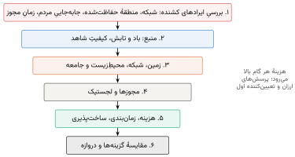
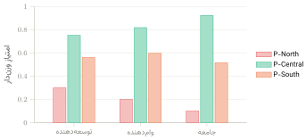
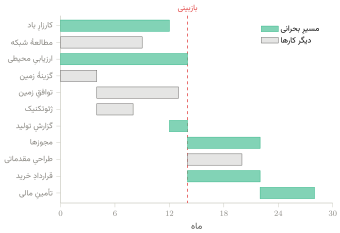
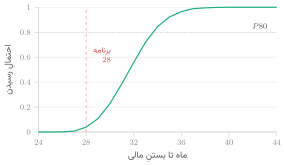
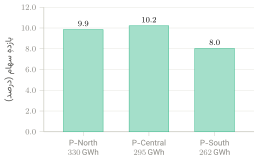
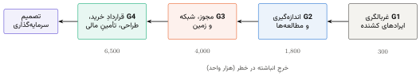
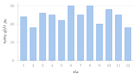

22 امکانسنجی و انتخابِ گزینه
22.1 نقشهٔ فصل
پس از این فصل، خواننده میتواند:
- منبع، زمین، شبکه، محیطِزیست، جامعه، مجوز، لجستیک، هزینه، زمانبندی و ساختپذیری را به ترتیبی غربال کند که پرسشهای ارزان و تعیینکننده اول بیایند؛ ایرادهای کشنده، اطلاعاتِ کمشده و بازهٔ هزینهٔ اولیه را مشخص کند.
- گزینهها را با مقایسهٔ چندمعیارهٔ شفاف بسنجد: معیار، وزنِ هر ذینفع، کیفیتِ شاهد، پایداریِ رتبه، نرخِ مبادله و حساسیت به امتیاز؛ و امتیاز را با پولِ مدلِ مالی کنار هم بگذارد.
- برنامهٔ توسعه بسازد: مطالعهها و متخصصان، شبکهٔ کارها و مسیرِ بحرانی، بازبینیِ پیشرفت، ریسکِ زمانبندی، بودجه بهازای دروازه، دفترِ ریسک، ارزشِ اطلاعات و درختِ تصمیمِ سرمایهگذاری.
- توسعه را با دروازههای مرحلهای و بررسیِ دقیق اداره کند: کنترلِ زمین، دسترسی و مسیرِ شبکه، مجوزها، تعهدهای ذینفعان، شاهدِ بانکپذیر و شرطهای پیشین؛ و نتیجهگیریِ حقوقی را به حقوقدانِ محلی بسپارد.
- پیش از تصمیمِ سرمایهگذاری، تأمینپذیری را با کارتِ امتیاز بسنجد: بلوغِ برآورد و احتیاط، پولِ توسعه، شاهدِ تولید و درآمد، خریدار، آمادگیِ شبکه و مجوز، تأمین و ساختپذیری، بیمه، آسیبپذیری و شرطهای باز.
- مسائلِ اجتماعی را پیش از ثابتشدنِ مکان غربال کند (زمین و معیشت، جابهجایی، کار و هجومِ کارگری، حقوقِ جامعه و مردمانِ بومی هر جا مصداق دارد، میراث، سلامت و ایمنی، مشاوره و شکایت، اثرهای انباشته) و بداند داوری با متخصصان، مقامها و خودِ مردمِ اثرپذیر است.
پیشنیازها: عدمِ قطعیتِ تولید و P90 (فصل 16)، مکانیابی و لایههای قید (فصل 14)، الزامها و شبکه (فصل 17) و مدلِ مالی (فصل 21).
- اگر احتمالِ موفقیتِ یک مرحله 0.6 و ارزشِ پس از آن 1,000 باشد و مرحله 400 هزینه داشته باشد، ارزشِ مورد انتظارِ رفتن چیست؟
- سه عددِ 10، 20 و 40 را به مقیاسِ صفر تا یک ببرید.
- دو کارِ پشتِسرِهمِ ۴ و ۶ ماهه و یک کارِ موازیِ ۸ ماهه: زمانِ کل چقدر است؟
- P90 وامدهنده با عدمِ قطعیتِ بیشتر بالاتر میرود یا پایینتر؟
- ارزشِ فعلیِ 1,000 در دو سالِ بعد با نرخِ 10 % چیست؟
پاسخها: (۱) \(0.6 \times 1{,}000 - 400 = 200\)؛ (۲) 0، 0.33، 1؛ (۳) ۱۰ ماه؛ (۴) پایینتر (فصل 16)؛ (۵) حدودِ 826. اگر دو پرسش یا بیشتر را نتوانستید، فصل 16 و فصل 21 را مرور کنید.
جایگاهِ این فصل در نیروگاهِ P. فصلهای ۱۳ تا ۲۱ مکانِ P-Central را فرض گرفتند و آن را با شاهد پر کردند. این فصل میپرسد آیا این مکانِ درست است و آیا توسعه باید ادامه یابد: سه مکانِ ساختگی را غربال و مقایسه میکند، توضیح میدهد چرا مکانی با انرژیِ کمتر ممکن است ترجیح داده شود، و پروندهٔ رفتن یا نرفتن را میسازد. تحویلدادنی: پروندهٔ امکانسنجی و تأمینپذیری، برنامهٔ ریسکِ اجتماعی و فهرستِ شرطها و موردهای باز، با تصمیمِ D-026.
سه مکان، جامعهها، مردم و همهٔ عددهای اجتماعی و محیطی ساختگیاند (A-311 تا A-315) و هیچ مکان یا جامعهٔ واقعیای را توصیف نمیکنند. پادمانهای اجتماعی غربال میشوند، نه داوری: ارزیابیِ اثر، برنامهٔ اسکانِ مجدد و رضایت کارِ متخصصانِ صلاحیتدار، مقامها و خودِ مردمِ اثرپذیر است. نتیجهگیریِ حقوقی دربارهٔ زمین، مجوز و قرارداد با حقوقدانِ محلی است. آستانهها، ردهها و هزینهها آموزشیاند.
22.2 الف. ترتیبِ غربالگری
22.2.1 پرسشهای ارزان و تعیینکننده، اول
ایده. هر مکانِ پیشنهادی برای نیروگاه صدها پرسش دارد، اما همه همارز نیستند. برخی ارزان پاسخ داده میشوند و میتوانند کلِ پروژه را متوقف کنند (ظرفیتِ شبکه، منطقهٔ حفاظتشده، جابهجاییِ مردم، زمانِ مجوز)؛ برخی گراناند و فقط مقدار را دقیق میکنند (برآوردِ دقیقِ تولید، طراحی). ترتیبِ غربالگری (شکل 22.1) پرسشهای ارزان و تعیینکننده را اول میگذارد تا پول برای مکانی که در هر حال متوقف میشود خرج نشود.

ایرادِ کشنده (به انگلیسی fatal flaw) شرطی است که اگر برقرار باشد و ارزان رفع نشود، مکان کنار گذاشته میشود. آزمونهای آموزشیِ این فصل (A-311):
TESTS = { # True = the site fails (teaching thresholds, A-311)
"no grid capacity within 50 km":
lambda f: f["grid_free_mw"] < 100 and f["reinforce"] <= 0,
"protected bird area overlap > 25 %":
lambda f: f["bird_overlap"] > 0.25,
"physical displacement without a plan":
lambda f: f["displaced"] > 0,
"permits longer than 36 months":
lambda f: f["permit_months"] > 36,
}fatal-flaw screen, run before any scoring (A-311):
P-North flags:
- protected bird area overlap > 25 %
- physical displacement without a plan
P-Central passes
P-South flags:
- no grid capacity within 50 km
a flag is a question, not a verdict: P-North's bird overlap
needs a survey and an avoidance layout before it is fatal,
and its displacement needs a resettlement plan that meets
the safeguards (section G) - or the site is dropped; a
flag that cannot be cleared cheaply stops the spendingمثال 22.1 (پرچم، نه حکم) پرسش. کدام مکان پرچم دارد و چرا؟ آیا پرچم یعنی کنار گذاشتنِ فوری؟
پاسخ. P-North دو پرچم دارد: همپوشانیِ 35 % با منطقهٔ پرندگان (بیش از 25 %) و جابهجاییِ فیزیکیِ شش خانوار بی برنامه. P-Central و P-South پرچم ندارند.
تفسیر. پرچم یک پرسش است: همپوشانی با پرندگان با پیمایش و چیدمانِ پرهیزی (فصلِ ۱۴) ممکن است رفع شود و جابهجایی فقط با برنامهٔ اسکانِ مجددی که با استانداردهای پادمان سازگار است (بخش 22.8) قابلِ پذیرش است. اگر رفعِ پرچم ارزان نباشد، خرج متوقف میشود. وارسی: آزمونِ شبکه P-North را پرچم نمیزند، چون تقویت پیشنهاد شده است؛ اما هزینه و انتظارِ آن در بخش 22.5 میآیند.
22.2.2 سه مکان کنارِ هم
سه مکانِ ساختگی این فصل: P-Central همان مکانِ فصلهای ۱۳ تا ۲۱ است؛ P-North و P-South گزینههای خیالیاند. هیچ مکان، جامعه یا شخصِ واقعیای توصیف نمیشود.
زمانِ مقایسه. مقایسه در ماهِ ۱۴ برنامهٔ توسعهٔ P-Central انجام میشود (بخش 22.4): کمپینِ اندازهگیری و گزارشِ تولیدِ آن تمام شده، اما مجوز، پیشنهادِ شبکه و قراردادها هنوز باز است. دو گزینهٔ دیگر از صفر آغاز میکنند. پس «ماه تا بهرهبرداری» برای هر مکان از همین بازبینی شمرده میشود: کارِ توسعهٔ باقیمانده، تأمینِ مالی و ساخت. این پرسشِ واقعیِ بسیاری از توسعهدهندگان است: «آیا هنوز روی مکانِ درست کار میکنیم؟»
SITES = {
"P-North": dict(
energy=330.0, energy_q=0.4, # GWh P50; reanalysis + 4-month mast
capex=150_000.0 + 6_000.0, # plant + 18 km new road
grid_km=45.0, grid_free_mw=0.0, reinforce=25_000.0, grid_wait=30,
land_ha=2_400.0, tenure="customary, many holders", households=38,
displaced=6, grazing_ha=900.0,
bird_overlap=0.35, heritage=1, water_scarce=False,
permit_months=30, road_km=18.0, slope_pct=9.0,
schedule=54), # 30 permits + 6 close + 18 build
"P-Central": dict(
energy=295.14, energy_q=0.9, # D-019: mast, lidar, station
capex=156_450.0,
grid_km=12.0, grid_free_mw=100.0, reinforce=0.0, grid_wait=12,
land_ha=1_900.0, tenure="state lease, two private parcels",
households=9,
displaced=0, grazing_ha=250.0,
bird_overlap=0.0, heritage=0, water_scarce=False,
permit_months=22, road_km=4.0, slope_pct=4.0,
schedule=32), # 14 to close + 18 build
"P-South": dict(
energy=262.0, energy_q=0.7, # after a 70 MW weak-grid limit
capex=145_000.0 + 1_500.0, # more PV, water storage
grid_km=3.0, grid_free_mw=70.0, reinforce=0.0, grid_wait=9,
land_ha=1_600.0, tenure="state land, clear title", households=2,
displaced=0, grazing_ha=60.0, seasonal=40,
bird_overlap=0.0, heritage=2, water_scarce=True,
permit_months=20, road_km=2.0, slope_pct=2.0,
schedule=42), # 20 permits + 6 close + 16 build
}
for _s in SITES.values():
_s.setdefault("seasonal", 0) # seasonal land users (herders)the three sites in the order of the screening sequence:
item P-North P-Central P-South
energy P50 GWh 330 295 262
evidence quality 0.4 0.9 0.7
capex k u 156,000 156,450 146,500
grid km / free MW 45 / 0 12 / 100 3 / 70
reinforcement k u 25,000 0 0
grid wait months 30 12 9
land ha 2,400 1,900 1,600
households / displaced 38 / 6 9 / 0 2 / 0
bird overlap 35% 0% 0%
permit months 30 22 20
new road km 18 4 2
slope % 9 4 2
months to COD 54 32 42
P-North has the most energy and every other problem; the
sequence puts the cheap, decisive questions (grid, protected
areas, people) before the expensive ones (yield, design)مثال 22.2 (انرژیِ بیشتر، همهٔ مشکلهای دیگر) پرسش. کدام مکان بیشترین انرژی را دارد و در چه چیزهایی بدتر است؟ کیفیتِ شاهدِ انرژی در هر مکان چیست؟
پاسخ. P-North با 330 GWh؛ اما شبکه 45 km دور و بیظرفیت (تقویتِ 25,000 هزار و ۳۰ ماه انتظار)، ۳۸ خانوار و ۶ جابهجایی، 35 % همپوشانی با پرندگان، 18 km جادهٔ تازه، شیبِ 9 % و ۵۴ ماه تا بهرهبرداری (۳۰ ماه مجوز، ۶ ماه تأمینِ مالی، ۱۸ ماه ساخت). کیفیتِ شاهد: 0.4 (بازتحلیل و چهار ماه دکل) در برابرِ 0.9 برای P-Central.
تفسیر. مکانی که در یک معیار بهترین است، ممکن است در بقیه بدترین باشد؛ و برتریِ آن یک معیار ممکن است بر شاهدِ ضعیف تکیه کند. غربالگری این را پیش از هر طراحی آشکار میکند. وارسی: ۳۲ ماهِ P-Central برابرِ ۱۴ ماه تا بستنِ مالی و ۱۸ ماه ساخت است؛ پولِ خرجشده بازنمیگردد (هزینهٔ ازدسترفته)، اما زمان و شاهدِ بهدستآمده برتریِ واقعیاند.
- چرا پرسشهای ارزان و تعیینکننده اول میآیند؟
- چهار آزمونِ ایرادِ کشنده را بنویسید.
- پرچم و حکم چه فرقی دارند؟
- کیفیتِ شاهدِ انرژیِ هر مکان را بنویسید.
22.2.3 ده بُعدِ غربالگری و شاهدِ هر کدام
ایده. هر بُعدِ غربالگری یک پرسشِ اصلی، یک شاهدِ ارزانِ اولیه و یک شاهدِ کامل در مرحلههای بعد دارد. جدولِ زیر آنها را به فصلهای کتاب وصل میکند:
| بُعد | پرسشِ اصلی | شاهدِ اولیه | شاهدِ کامل | فصلها |
|---|---|---|---|---|
| منبع | انرژیِ سالانه و پراکندگی؟ | بازتحلیل، اطلس | کمپینِ اندازهگیری، گزارشِ تولید | ۱۲ تا ۱۶ |
| زمین | چه کسی مالک یا بهرهبردار است؟ | نقشهٔ ثبتی، بازدید | توافقها، بررسیِ حقوقی | ۱۴، ۵۵ تا ۵۷ |
| شبکه | ظرفیت، فاصله، تقویت؟ | نقشهٔ شبکه، گفتوگو | مطالعهٔ اتصال، پیشنهاد | ۱۷، ۲۷، ۲۸ |
| محیطِزیست | زیستگاهها، پرندگان، آب؟ | لایههای GIS | پیمایشها، ارزیابیِ محیطی | ۱۴، ۳۳ |
| جامعه | چه کسانی اثر میپذیرند؟ | بازدید، آمار | ارزیابیِ اجتماعی، مشاوره | ۱۴، بخش 22.8 |
| مجوز | چه مجوزهایی، چه زمانی؟ | فهرستِ مقامها | برنامهٔ مجوز | ۱۷، ۵۵ تا ۵۷ |
| لجستیک | تیغهها و ترانسفورماتور میرسند؟ | نقشهٔ راه، پلها | مطالعهٔ مسیر | ۱۴، ۴۶ |
| هزینه | چه بازهای؟ | قیمتِ واحد | پیشنهادها | ۱۸، ۲۱، ۳۸ |
| زمانبندی | چند ماه تا بهرهبرداری؟ | مسیرِ بحرانیِ ساده | برنامهٔ کامل | بخش 22.4 |
| ساختپذیری | شیب، خاک، آب، نیروی کار؟ | نقشهٔ شیب، بازدید | ژئوتکنیک، طراحی | ۲۹، ۴۷ |
زنجیرهٔ تأمین، نیروی کار و ساختپذیری. امکانسنجی طراحیِ فرایندِ کارخانه نیست، اما باید بپرسد: آیا سازندگان در بازهٔ زمانیِ پروژه ظرفیتِ تحویل دارند (فصلهای ۳۹ تا ۴۱)؟ چه تعداد نیروی کار لازم است و از کجا میآید (اثرِ هجومِ کارگری، بخش 22.8)؟ آیا جرثقیلها، جادهها و بندرها برای قطعاتِ بزرگ آمادهاند (فصلهای ۴۶ و ۴۷)؟ پاسخِ «نه» به هر کدام هزینه و زمان میافزاید و در مقایسهٔ گزینهها میآید.
مثال 22.3 (بُعدی که ارزان پرسیده نشد) پرسش. کدام بُعد در غربالگریِ P-South از ابتدا پرسیده نشده بود و اگر دیر کشف میشد چه هزینهای داشت؟
پاسخ. قدرتِ شبکه: شبکهٔ نزدیکِ P-South ضعیف است و صادرات را به 70 MW محدود میکند؛ انرژیِ تحویلی از حدودِ 275 به 262 GWh میرسد. اگر پس از طراحی کشف میشد، هزینهٔ طراحی هدر میرفت و ممکن بود جبرانساز یا ذخیرهساز لازم شود (فصلهای ۱۷ و ۲۰).
تفسیر. «فاصله تا شبکه» بهتنهایی کافی نیست؛ «ظرفیت و قدرتِ شبکه» پرسشِ درست است. یک گفتوگوی کوتاه با بهرهبردارِ شبکه در غربالگری ارزانترین شاهد است.
- ده بُعدِ غربالگری را با شاهدِ اولیهٔ هر کدام بنویسید.
- چرا امکانسنجی طراحیِ فرایندِ کارخانه نیست؟
- سه پرسشِ زنجیرهٔ تأمین و ساختپذیری را بنویسید.
- چرا «فاصله تا شبکه» کافی نیست؟
22.2.4 بازهٔ هزینهٔ اولیه و اطلاعاتِ کمشده
ایده. در غربالگری، هزینه یک بازه است، نه یک عدد. هر قلم یک کمترین، محتملترین و بیشترین دارد؛ پهنای بازه به ردهٔ برآورد بستگی دارد: مکانی با شاهدِ ضعیف (ردهٔ غربالگری) بازهٔ پهنتری از مکانی با مطالعهٔ امکانسنجی دارد. با نمونهگیریِ مونتکارلو از توزیعِ مثلثیِ هر قلم، صدکهای هزینهٔ کل به دست میآیند و احتیاط بهجای درصدِ ثابت از ریسک حساب میشود:
\[ C_{\text{cont}} = C_{P80} - C_{\text{base}} \tag{22.1}\]
CLASS = { # (low, high) range of each item by estimate class (A-314)
"feasibility": {"wind": (-0.10, 0.20), "PV": (-0.10, 0.15),
"substation": (-0.15, 0.30), "battery": (-0.15, 0.20),
"development": (-0.05, 0.25)},
"screening": {"wind": (-0.25, 0.45), "PV": (-0.20, 0.40),
"substation": (-0.30, 0.60), "battery": (-0.25, 0.40),
"development": (-0.10, 0.50)},
}
def cost_draws(name: str, n: int = 20_000) -> tuple[float, np.ndarray]:
"""Base cost without contingency and n Monte Carlo totals: each
item triangular (low, base, high); grid works on their own range."""
f = src.SITES[name]
base = f["capex"] / 1.05 # remove the 5 % allowance
cls = CLASS["screening" if f["energy_q"] < 0.5 else "feasibility"]
tot = np.zeros(n)
for item, share in SHARES.items():
b = base * share
lo, hi = cls[item]
tot += RNG.triangular(b * (1 + lo), b, b * (1 + hi), n)
if f["reinforce"]:
r = f["reinforce"]
tot += RNG.triangular(0.8 * r, r, 1.6 * r, n)
return base + f["reinforce"], totpreliminary cost ranges (Monte Carlo of items, k u):
site base P50 P80 P90 contingency to P80
P-North 173,571 187,039 199,335 205,652 14.8 %
P-Central 149,000 153,249 158,443 161,115 6.3 %
P-South 139,524 143,493 148,343 150,864 6.3 %
the base is the sum of most-likely values; skewed ranges
put the P50 above it, so a 5 % allowance is too thin even
for P-Central; P-North's screening-class range and its grid
works widen everything - its P80 is far above the others
(items drawn independently: correlated prices would widen
the range further)مثال 22.4 (پنج درصد کافی نیست) پرسش. هزینهٔ پایه، P50 و P80 هر مکان چیست؟ احتیاطِ لازم تا P80 چند درصد است؟
پاسخ. P-Central: پایه 149,000، P50 153,249، P80 158,443 هزار: احتیاطِ 6.3 %. P-South هم 6.3 %. P-North: پایه 173,571 با کارهای شبکه، P80 199,335: 14.8 %.
تفسیر. پایه جمعِ مقدارهای محتملترین است؛ وقتی بازهها کجاند (بالا بیشتر از پایین)، P50 بالای پایه میافتد. پس احتیاطِ 5 % فصلِ ۲۱ حتی برای P-Central نازک است و A-304 باید در مرحلهٔ بعد بازبینی شود. فرضِ مستقلبودنِ قلمها بازه را کوچکتر از واقع نشان میدهد: قیمتِ فولاد و ارز همهٔ قلمها را با هم جابهجا میکند. وارسی: میانگینِ توزیعِ مثلثیِ \((a, m, b)\) برابرِ \((a + m + b)/3\) است و برای قلمِ باد با \((-10\,\%, +20\,\%)\) حدودِ 3 % بالای مقدارِ محتمل.
اطلاعاتِ کمشده. هر بازهٔ پهن نشانهٔ اطلاعاتی است که هنوز نداریم. فهرستِ اطلاعاتِ کمشده برای هر مکان همان شاهدِ بعدیِ بخش 22.5.3 است، با این افزوده که هر قلم بگوید کدام بازه را تنگ میکند: پیشنهادِ شبکه بازهٔ قلمِ اتصال را، پیشنهادِ توربین بازهٔ قلمِ باد را، ژئوتکنیک بازهٔ پیها را. چنین فهرستی تصمیم میگیرد پولِ مطالعه اول کجا خرج شود: جایی که بازه پهنتر و وزنِ قلم بیشتر است.
- احتیاط را با معادلهٔ 22.1 تعریف کنید.
- چرا P50 بالای پایه است؟
- فرضِ مستقلبودنِ قلمها بازه را چگونه تغییر میدهد؟
- برای هر مکان یک قلمِ اطلاعاتِ کمشده و بازهای را که تنگ میکند بنویسید.
22.3 ب. ارزیابیِ گزینهها
22.3.1 معیارها، امتیازها و وزنها
ایده. پس از غربالگری، گزینههای باقیمانده با مقایسهٔ چندمعیاره (به انگلیسی multi-criteria analysis) سنجیده میشوند: هر معیار به مقیاسِ 0 تا 1 برده میشود (بهترین یک)، با وزنی ضرب و جمع میشود:
\[ S_i = \sum_k w_k\, s_{ik}, \qquad s_{ik} = \frac{x_{ik} - \min_i x_{ik}}{\max_i x_{ik} - \min_i x_{ik}} \tag{22.2}\]
(برای معیارهایی که کمترشان بهتر است، \(1 - s_{ik}\)). وزنها ارزشهای تصمیمگیر را نشان میدهند، نه واقعیتِ فنی؛ پس باید آشکار و قابلِ بحث باشند. این فصل سه مجموعه وزنِ آموزشی دارد: توسعهدهنده، وامدهنده و جامعه (A-312).
CRITERIA = [ # (label, value function, higher is better, evidence key)
("energy", lambda f: f["energy"], True, "energy_q"),
("cost incl. grid", lambda f: f["capex"] + f["reinforce"], False, None),
("time to COD", lambda f: f["schedule"], False, None),
("grid readiness", lambda f: f["grid_free_mw"] - f["grid_km"], True, None),
("environment", lambda f: (-f["bird_overlap"] - 0.1 * f["heritage"]
- 0.2 * f["water_scarce"]), True, None),
("social", lambda f: -(f["households"] + 5 * f["displaced"]
+ 0.5 * f["seasonal"]), True, None),
("constructability", lambda f: -(f["slope_pct"] + 0.3 * f["road_km"]),
True, None),
]
WEIGHTS = { # three stakeholder views (A-312, teaching)
"developer": [0.30, 0.25, 0.15, 0.10, 0.05, 0.05, 0.10],
"lender": [0.20, 0.20, 0.15, 0.15, 0.10, 0.10, 0.10],
"community": [0.10, 0.05, 0.05, 0.05, 0.30, 0.40, 0.05],
}def normalise(values, higher_is_better: bool = True) -> np.ndarray:
"""Min-max scale to 0..1 (1 = best); equal values give 1."""
v = np.asarray(values, float)
lo, hi = v.min(), v.max()
if hi - lo < 1e-12:
return np.ones_like(v)
s = (v - lo) / (hi - lo)
return s if higher_is_better else 1.0 - s
def weighted(scores, weights) -> np.ndarray:
"""scores: options x criteria (0..1); weights summing to 1."""
w = np.asarray(weights, float)
return np.asarray(scores, float) @ (w / w.sum())
def dominated(scores) -> list[int]:
"""Indices of options no better than another in every criterion and
worse in at least one."""
s = np.asarray(scores, float)
out = []
for i in range(len(s)):
for j in range(len(s)):
if i != j and (s[j] >= s[i]).all() and (s[j] > s[i]).any():
out.append(i)
break
return outnormalised scores (1 = best of the three):
criterion P-North P-Central P-South
energy 1.00 0.49 0.00
cost incl. grid 0.00 0.71 1.00
time to COD 0.00 1.00 0.55
grid readiness 0.00 1.00 0.84
environment 0.00 1.00 0.11
social 0.00 1.00 0.78
constructability 0.00 0.78 1.00
weighted totals by stakeholder:
developer 0.30 0.75 0.56
lender 0.20 0.82 0.60
community 0.10 0.92 0.51
dominated options: none
min-max scores exaggerate small differences between three
options and depend on which options are in the set: the
total is a summary for discussion, not a measurement
مثال 22.5 (سه نگاه، یک برنده) پرسش. کدام مکان زیرِ هر سه مجموعه وزن اول است؟ آیا گزینهٔ «مغلوب» داریم؟ چه محدودیتی در روشِ کمینه-بیشینه هست؟
پاسخ. P-Central: توسعهدهنده 0.75، وامدهنده 0.82، جامعه 0.92؛ P-South دوم (0.56، 0.60، 0.51) و P-North سوم. گزینهٔ مغلوب نداریم (P-North در انرژی بهترین است).
تفسیر. مقیاسِ کمینه-بیشینه تفاوتهای کوچک میانِ سه گزینه را بزرگ نشان میدهد و به مجموعهٔ گزینهها وابسته است: افزودن یا برداشتنِ یک مکان امتیازِ بقیه را تغییر میدهد. پس امتیازِ کل خلاصهای برای گفتوگو است، نه اندازهگیری؛ تصمیم با پول (بخش 22.5)، پرچمها و شاهد گرفته میشود. وارسی: امتیازِ انرژیِ P-Central \((295 - 262)/(330 - 262) = 0.49\).
- معادلهٔ 22.2 را برای سه مقدارِ 10، 20، 40 حساب کنید.
- چرا وزنها ارزشاند نه واقعیت؟
- گزینهٔ مغلوب را تعریف کنید.
- دو محدودیتِ مقیاسِ کمینه-بیشینه را بنویسید.
22.3.2 عدمِ قطعیتِ وزنها، کیفیتِ شاهد و حساسیتِ امتیاز
ایده. وزنها دقیق نیستند: دو عضوِ یک هیئتمدیره وزنِ انرژی را 25 یا 35 % میدانند. اگر رتبهبندی با هر تغییرِ کوچکِ وزن عوض شود، پایدار نیست. با هزاران مجموعه وزنِ تصادفی در اطرافِ هر نگاه (توزیعِ دیریکله) میشمریم هر مکان چند بار اول میشود؛ و میپرسیم وزنِ انرژی باید چقدر باشد تا رتبه عوض شود.
how often each site ranks first when the weights are uncertain
(5,000 random weight sets around each stakeholder's view):
stakeholder P-North P-Central P-South
developer 0% 99% 1%
lender 0% 100% 0%
community 0% 100% 0%
the developer's ranking turns to P-North only when energy weighs 63 %
a ranking that survives most plausible weights is robust;
one that needs a single extreme weight is an argumentمثال 22.6 (رتبهای که پایدار است) پرسش. در چند درصدِ مجموعهوزنها هر مکان اول است؟ P-North با چه وزنی برای انرژی اول میشود؟
پاسخ. توسعهدهنده: P-Central 99 %، P-South 1 %؛ وامدهنده و جامعه: 100 % P-Central. P-North فقط وقتی اول میشود که وزنِ انرژی 63 % باشد (وزنهای دیگر به همان نسبت کوچک شوند).
تفسیر. رتبهای که در بیشترِ وزنهای معقول دوام میآورد استوار است؛ رتبهای که به یک وزنِ افراطی نیاز دارد استدلال است، نه نتیجه. کسی که P-North را میخواهد باید بگوید چرا انرژی بیش از نیمِ تصمیم است.
کیفیتِ شاهد. امتیازی که بر شاهدِ ضعیف تکیه دارد باید کمتر شمرده شود. قاعدهٔ آموزشی: امتیاز به سمتِ 0.5 (نادانسته) کشیده میشود به اندازهٔ کمبودِ کیفیت:
\[ s^{\text{adj}} = 0.5 + q\,(s - 0.5) \tag{22.3}\]
the energy score shrunk toward 0.5 by the quality of its evidence:
site quality energy score adjusted developer total
P-North 0.4 1.00 0.70 0.30 -> 0.21
P-Central 0.9 0.49 0.49 0.75 -> 0.75
P-South 0.7 0.00 0.15 0.56 -> 0.61
P-North's energy lead rests on reanalysis and four months
of mast data: until a full campaign (ch 13) confirms it, it
counts for less; quality is recorded beside every scoreمثال 22.7 (برتریای که به شاهدِ ضعیف تکیه دارد) پرسش. با کیفیتِ 0.4، امتیازِ انرژیِ P-North و امتیازِ کلِ آن چه میشود؟
پاسخ. امتیازِ انرژی از 1.00 به 0.70؛ امتیازِ کل (توسعهدهنده) از 0.30 به 0.21. امتیازِ P-South برعکس بالا میرود (0.56 به 0.61)، چون امتیازِ صفرش به سوی 0.5 کشیده میشود.
تفسیر. کیفیت کنارِ هر امتیاز ثبت میشود تا روشن باشد کدام برتری ثابتشده و کدام ادعایی است. کمپینِ کاملِ اندازهگیری (فصلِ ۱۳) کیفیت را بالا میبرد؛ تا آن زمان برتریِ P-North در انرژی یک فرضیه است.
اولویتهای ذینفعان. سه مجموعه وزن نشان میدهند ذینفعان مختلف چیزهای مختلف میخواهند. هدف یکی کردنِ وزنها نیست، دیدنِ اینکه آیا تصمیم با هر نگاه یکی است یا نه. اگر نیست، تعارض را آشکار کنید (مثلاً «توسعهدهنده انرژی میخواهد، جامعه زمین») و با شاهد و مذاکره حل کنید، نه با پنهانکردنِ یک وزن.
- پایداریِ رتبه را چگونه میسنجیم؟
- معادلهٔ 22.3 را برای \(s = 0\) و \(q = 0.4\) حساب کنید.
- «استوار» و «استدلال» را در این بخش از هم جدا کنید.
- وقتی ذینفعان رتبههای متفاوت میدهند چه باید کرد؟
22.3.3 نرخِ مبادله و حساسیت به امتیاز
ایده. وزن در مقایسهٔ چندمعیاره یک مبادله را پنهان میکند: چند گیگاواتساعت انرژی ارزشِ یک ماه تأخیر یا هزار واحد هزینه را دارد؟ برای معیارهایی که به پول تبدیل میشوند، مدلِ مالی این نرخها را آشکار میدهد: اثرِ یک درصد انرژی، یک درصد هزینه و یک ماه تأخیر بر ارزشِ فعلی، و نسبتِ آنها.
trade-off rates from the chapter 21 model (NPV at close, k u):
+1 % energy (2.95 GWh a year) +1,935 equity IRR +0.35 pt
+1 % capital cost (1,564 k u) -1,412 equity IRR -0.25 pt
one month later financial close -31 (NPV today)
exchange rates:
1,000 k u of capital = 1.4 GWh a year of energy
one month later = 0.05 GWh a year of energy
P-North against P-Central in these rates:
energy +34.9 GWh a year +22,853
cost incl. grid +24,550 -22,158
22 months later close -682 (approx.)
the linear rates reproduce the model's answer within a few
hundred k u: the energy lead buys the grid works, and the
delay takes the rest - a trade-off made explicit, not hidden
in a weightمثال 22.8 (مبادلهای که آشکار شد) پرسش. یک درصد انرژی و یک درصد هزینه چه اثری بر ارزشِ فعلی دارند؟ برتریِ انرژیِ P-North با این نرخها چگونه خرج میشود؟
پاسخ. یک درصد انرژی +1,935 و یک درصد هزینه −1,412 هزار؛ هر هزار واحد هزینه برابرِ 1.4 GWh انرژیِ سالانه است. P-North: انرژیِ بیشتر +22,853، هزینهٔ بیشتر −22,158، و ۲۲ ماه تأخیر حدودِ −682.
تفسیر. برتریِ انرژیِ P-North تقریباً همهاش صرفِ کارهای شبکه و راهش میشود و تأخیر باقی را میبرد؛ همان پاسخِ مدل در مثال 22.20، این بار با دلیلِ آشکار. اثرِ یک ماه تأخیر بر ارزشِ فعلی کوچک است (31 هزار) چون ارزشِ فعلی خودش کوچک است؛ هزینهٔ واقعیِ تأخیر برای توسعهدهنده سربارِ ماهانه، ریسکِ رقابت و ازدسترفتنِ پنجرهٔ قرارداد است که این عدد نمیبیند. وارسی: \(22{,}853 - 22{,}158 = 695\) نزدیکِ \(5{,}772 - 5{,}158 = 614\) است.
حساسیت به امتیاز. پرسشِ مکمل: یک امتیازِ P-Central چقدر باید پایین بیاید تا رتبهٔ نخست از دست برود؟ اگر برتری \(M\) و وزنِ معیار \(w_k\) باشد، افتِ لازم \(\Delta_k = M/w_k\) است؛ اگر \(\Delta_k\) از خودِ امتیاز بیشتر باشد، هیچ خطایی در آن معیار بهتنهایی رتبه را عوض نمیکند.
how far one P-Central score may fall before it loses first place
(developer weights; lead over the second 0.19):
criterion weight score fall needed possible
energy 0.30 0.49 0.64 no
cost incl. grid 0.25 0.71 0.77 no
time to COD 0.15 1.00 1.28 no
grid readiness 0.10 1.00 1.92 no
environment 0.05 1.00 3.83 no
social 0.05 1.00 3.83 no
constructability 0.10 0.78 1.92 no
no single score can fall far enough: even the energy score
would have to drop by more than it has; only several errors
together, or other weights (lab B), could change the first
place - the evidence effort goes to energy and cost, the two
heaviest criteriaمثال 22.9 (هیچ امتیازی بهتنهایی کافی نیست) پرسش. کدام امتیازِ P-Central اگر نادرست باشد، رتبه را عوض میکند؟
پاسخ. هیچکدام بهتنهایی: برتری 0.19 است؛ امتیازِ انرژی باید 0.64 بیفتد در حالی که خودش 0.49 است، و هزینه 0.77 در برابرِ 0.71.
تفسیر. فقط چند خطا با هم، یا وزنهای دیگر (بخش 22.3.2)، رتبه را عوض میکنند. این آزمون میگوید تلاشِ شاهد کجا خرج شود: روی دو معیارِ سنگینتر (انرژی و هزینه). وارسی: \(0.19/0.30 = 0.63\) (با گردکردن 0.64).
- نرخِ مبادلهٔ «هزار واحد هزینه به انرژی» را از دو اثرِ یکدرصدی حساب کنید.
- چرا اثرِ یک ماه تأخیر بر ارزشِ فعلی کوچک است ولی برای توسعهدهنده بزرگ؟
- افتِ لازم برای معیاری با وزنِ 0.10 و برتریِ 0.19 چیست؟
- دروازههای تصمیم چگونه به این دو آزمون وصل میشوند (بخش 22.6)؟
22.3.4 وزن از کجا میآید: وزندهیِ نوسانی و نقشهٔ ذینفعان
ایده. وزنها نباید «حسی» نوشته شوند. در وزندهیِ نوسانی (به انگلیسی swing weighting) از تصمیمگیر میپرسیم: «اگر بتوانید فقط یک معیار را از بدترین گزینه به بهترین ببرید، کدام را انتخاب میکنید؟» به آن ۱۰۰ امتیاز میدهیم و به بقیه به نسبتِ اهمیتِ همان جابهجایی؛ وزن سهمِ هر امتیاز از جمع است:
\[ w_k = \frac{v_k}{\sum_j v_j} \tag{22.4}\]
SWING = { # points for moving each criterion from worst to best site
"energy": 100, "cost incl. grid": 80, "time to COD": 50,
"grid readiness": 35, "environment": 20, "social": 20,
"constructability": 30,
}
def swing_weights(points: dict) -> np.ndarray:
"""Weights proportional to the points given to each swing."""
v = np.array([points[c[0]] for c in lab_b.CRITERIA], float)
return v / v.sum()weights from a swing-weighting interview (developer, teaching):
criterion points weight developer set
energy 100 0.30 0.30
cost incl. grid 80 0.24 0.25
time to COD 50 0.15 0.15
grid readiness 35 0.10 0.10
environment 20 0.06 0.05
social 20 0.06 0.05
constructability 30 0.09 0.10
totals: P-North 0.30, P-Central 0.76, P-South 0.55
if the energy range shrank to 295-330 GWh the swing is 51% as large:
energy points 51, weight 0.30 -> 0.18
a weight answers 'how much does moving from the worst to the
best option on this criterion matter?' - it depends on the
range of the options, so weights are re-asked when the set
of options changesمثال 22.10 (وزنی که به بازه بسته است) پرسش. وزنهای حاصل از مصاحبه را با مجموعهٔ توسعهدهنده مقایسه کنید. اگر بازهٔ انرژی از 262–330 به 295–330 GWh تنگ شود، وزنِ انرژی چه میشود؟
پاسخ. وزنها تقریباً همان مجموعهٔ توسعهدهندهاند (انرژی 0.30، هزینه 0.24، …) و رتبه همان است. با بازهٔ تنگتر، نوسانِ انرژی 51 % میشود و وزنش از 0.30 به 0.18 میافتد.
تفسیر. وزن پاسخِ این پرسش است که جابهجاییِ میانِ گزینههای موجود چقدر مهم است، نه اینکه «انرژی چقدر مهم است». پس وقتی مجموعهٔ گزینهها عوض میشود (یک مکان کنار میرود)، وزنها باید دوباره پرسیده شوند؛ نگهداشتنِ وزنِ قدیم با بازهٔ تازه خطای رایجی است. وارسی: \(100/335 = 0.30\) و \(51/286 = 0.18\).
نقشهٔ ذینفعان. اولویتهای ذینفعان در وزنها میآیند؛ شیوهٔ درگیرکردنِ آنها در نقشهای از علاقه و نفوذ. نقشه میگوید با هر گروه چند بار و چهقدر عمیق گفتوگو شود:
stakeholder map by interest and influence (fictional types):
stakeholder interest influence approach
landholders of two parcels 5 4 manage closely
village council 5 3 involve and consult
seasonal herders (P-South) 5 2 involve and consult
grid operator 3 5 keep satisfied
permitting authority 3 5 keep satisfied
lenders 4 5 manage closely
local businesses 3 2 keep informed
environmental group 4 3 involve and consult
nearby town residents 2 2 keep informed
turbine maker 3 3 keep informed
the map sets how often and how deeply each group is engaged;
it does not rank whose rights count - people with high
interest and little influence (herders, the village) need
the most deliberate consultation, not the leastمثال 22.11 (نفوذِ کم، علاقهٔ زیاد) پرسش. کدام گروهها «مدیریتِ نزدیک» و کدام «مشارکت و مشاوره» میخواهند؟ آیا نقشه میگوید حقِ چه کسی مهمتر است؟
پاسخ. مدیریتِ نزدیک: صاحبانِ دو قطعهٔ زمین و وامدهندگان. مشارکت و مشاوره: شورای روستا، کوچروهای فصلی و گروهِ محیطِزیستی. نه، نقشه دربارهٔ حق داوری نمیکند.
تفسیر. نقشه ابزارِ برنامهریزیِ گفتوگو است، نه رتبهبندیِ ارزشِ مردم. گروههایی با علاقهٔ زیاد و نفوذِ کم (روستا، کوچروها) بیشترین مشاورهٔ آگاهانه را لازم دارند، چون صدایشان بی برنامه شنیده نمیشود؛ شرطهای وامدهندگان نیز همین را میخواهند (بخش 22.8). همهٔ گروهها نوعهای ساختگیاند.
- پرسشِ وزندهیِ نوسانی را بنویسید.
- معادلهٔ 22.4 را برای امتیازهای 100، 50، 50 حساب کنید.
- چرا وزنها با تغییرِ مجموعهٔ گزینهها دوباره پرسیده میشوند؟
- چهار رویکردِ نقشهٔ ذینفعان را نام ببرید.
22.4 ج. برنامهٔ توسعه
22.4.1 مطالعهها، پیمایشها و مسیرِ بحرانی
ایده. پس از انتخابِ مکان، برنامهٔ توسعه میگوید چه مطالعهها، پیمایشها و درخواستهای دادهای لازم است، چه کسی (کدام متخصص) آنها را انجام میدهد، چقدر هزینه دارند، به چه ترتیبی و چه زمانی تمام میشوند. ترتیب با روشِ مسیرِ بحرانی (به انگلیسی critical path method, CPM) حساب میشود: زودترین پایانِ هر کار، و کارهای بحرانی که هر روزِ تأخیرشان پایانِ کل را عقب میبرد.
def critical_path(tasks: dict) -> tuple[float, list[str], dict]:
"""tasks: name -> (duration, [predecessors]). Forward pass for the
earliest finish, backward pass for slack; returns (duration, the
critical tasks in order, slack by task)."""
order, done = [], set()
while len(order) < len(tasks):
for t, (_, pre) in tasks.items():
if t not in done and all(p in done for p in pre):
order.append(t)
done.add(t)
ef = {}
for t in order:
d, pre = tasks[t]
ef[t] = d + max((ef[p] for p in pre), default=0.0)
total = max(ef.values())
lf = {t: total for t in tasks}
for t in reversed(order):
for s, (_, pre) in tasks.items():
if t in pre:
lf[t] = min(lf[t], lf[s] - tasks[s][0])
slack = {t: lf[t] - ef[t] for t in tasks}
crit = [t for t in order if abs(slack[t]) < 1e-9]
return total, crit, slackTASKS = { # months, predecessors (P-Central, the plan drawn at G1)
"wind campaign (12 mo)": (12, []),
"grid study and offer": (9, []),
"ESIA baseline and report": (14, []),
"land options and access": (4, []),
"land agreements": (9, ["land options and access"]),
"geotechnical survey": (4, ["land options and access"]),
"energy yield report": (2, ["wind campaign (12 mo)"]),
"permits": (8, ["ESIA baseline and report", "land options and access"]),
"front-end design": (6, ["energy yield report", "grid study and offer",
"geotechnical survey"]),
"PPA negotiation": (8, ["energy yield report"]),
"financing and close": (6, ["permits", "front-end design",
"PPA negotiation", "land agreements"]),
}development plan of P-Central as a network (months):
months to financial close: 28
critical path:
wind campaign (12 mo)
ESIA baseline and report
energy yield report
permits
PPA negotiation
financing and close
slack of the others:
grid study and offer 7
land options and access 8
land agreements 9
geotechnical survey 8
front-end design 2
two chains are critical, 28 months each: wind campaign ->
yield report -> PPA, and ESIA -> permits; a month lost on
either moves financial close; the ESIA needs its seasons
(ch 33), so it starts on day one with the campaign
مثال 22.12 (دو زنجیرهٔ بحرانی) پرسش. زمان تا بستنِ مالی و کارهای بحرانی کداماند؟ مطالعهٔ شبکه چقدر شناوری دارد؟
پاسخ. ۲۸ ماه. دو زنجیره بحرانیاند: کمپینِ باد ← گزارشِ تولید ← قراردادِ خرید ← تأمینِ مالی (\(12 + 2 + 8 + 6 = 28\)) و ارزیابیِ محیطی ← مجوزها ← تأمینِ مالی (\(14 + 8 + 6 = 28\)). مطالعهٔ شبکه ۷ ماه، توافقِ زمین ۹ ماه و طراحیِ مقدماتی ۲ ماه شناوری دارند.
تفسیر. دو زنجیرهٔ همزمانِ بحرانی یعنی هیچکدام نباید دیر شود؛ ارزیابیِ محیطی به فصلها نیاز دارد (پرندگانِ کوچرو) و باید از روزِ نخست با کمپین آغاز شود. شناوریِ مطالعهٔ شبکه فریبنده است: اگر پیشنهادِ شبکه هزینهٔ تقویت داشته باشد، کلِ اقتصاد عوض میشود؛ پس زود آغاز میشود حتی با شناوری.
22.4.2 بازبینیِ پیشرفت در ماهِ ۱۴
برنامه یک بار کشیده نمیشود؛ در هر بازبینی، کارهای تمامشده صفر، کارهای دیررسیده با مدتِ باقیمانده و بقیه با مدتِ کامل دوباره در همان شبکه گذاشته میشوند:
progress review at month 14:
done: wind campaign, ESIA baseline and report, land options and access,
geotechnical survey, energy yield report
late: grid offer due month 9, now forecast 16;
land agreements due month 13, now forecast 17
financial close forecast: month 28 (plan 28)
critical now:
grid study and offer
permits
front-end design
PPA negotiation
financing and close
slack left: land agreements 5 months
close holds at 28, but the grid chain has used all its slack
and is now critical: one more month on the grid offer moves
financial close; a review re-runs the network from todayمثال 22.13 (شناوریای که خرج شد) پرسش. در ماهِ ۱۴، پیشنهادِ شبکه ۷ ماه و توافقِ زمین ۴ ماه دیر است. آیا بستنِ مالی عقب میرود؟ چه چیزی عوض شده است؟
پاسخ. بستنِ مالی همچنان ماهِ ۲۸ است، چون هر دو تأخیر در شناوریِ کارها جا شدند. اما زنجیرهٔ شبکه ← طراحیِ مقدماتی ← تأمینِ مالی همهٔ شناوریاش را خرج کرده و بحرانی شده؛ توافقِ زمین هنوز ۵ ماه شناوری دارد.
تفسیر. گزارشِ «تاریخ تغییر نکرده» کافی نیست؛ باید گفت چقدر حاشیه مانده است. ریسکِ «پیشنهادِ شبکه دیرتر از ۱۲ ماه» در دفترِ ریسکِ دروازهٔ ۱ (مثال 22.15) اکنون رخ داده و به یک مسئله تبدیل شده است: پیگیری با بهرهبردارِ شبکه کارِ هفتگیِ مدیرِ توسعه میشود. وارسی: \(14 + 2 = 16\) و \(16 + 6 + 6 = 28\).
| کار | متخصص | دادهٔ لازم | هزینهٔ آموزشی |
|---|---|---|---|
| کمپینِ باد و تابش | مشاورِ منبع | مجوزِ دکل، لایدار | 600 هزار |
| ارزیابیِ محیطی و اجتماعی | مشاورِ محیطی و اجتماعی | پیمایشهای فصلی، مشاوره | 900 هزار |
| مطالعهٔ شبکه | مهندسِ سیستمِ قدرت | دادهٔ شبکه از بهرهبردار | 250 هزار |
| ژئوتکنیک | مهندسِ ژئوتکنیک | دسترسی به زمین | 350 هزار |
| بررسیِ حقوقیِ زمین | حقوقدانِ محلی | اسنادِ ثبتی | 150 هزار |
| طراحیِ مقدماتی | مهندسِ مالک | همهٔ بالا | 800 هزار |
- کارِ بحرانی را تعریف کنید.
- زمانِ کلِ برنامه را از دو زنجیره وارسی کنید.
- چرا ارزیابیِ محیطی از روزِ نخست آغاز میشود؟
- چرا کارِ دارای شناوری هم ممکن است زود آغاز شود؟
22.4.3 بودجهٔ توسعه، دفترِ ریسک و ارزشِ اطلاعات
بودجه بهازای دروازه. پولِ توسعه پیش از هر تعهدِ وامدهنده و در خطر خرج میشود: اگر پروژه نرسد، از دست میرود.
development budget by stage gate (k u, teaching):
gate spend cumulative
G1 screening 300 300
G2 measurement and studies 1,500 1,800
G3 permits, grid, land 2,200 4,000
G4 PPA, design, financing 2,500 6,500
total 6,500 k u = 4.2 % of the capital cost,
spent at risk before any lender commits: equity of the
developer, recovered at financial close if the project goesمثال 22.14 (چهار درصدِ در خطر) پرسش. کلِ بودجهٔ توسعه و سهمش از هزینهٔ سرمایهای چیست؟ از چه منبعی تأمین میشود؟
پاسخ. 6,500 هزار، 4.2 % هزینهٔ سرمایهای؛ از سهامِ توسعهدهنده، که اگر پروژه به بستنِ مالی برسد بازمیگردد (بخشی از مصارف، بخش 21.2.4).
تفسیر. خرجِ هر دروازه با احتمالِ موفقیت بالا میرود: ارزان در آغاز، گران وقتی بیشترِ پرسشهای کشنده پاسخ گرفتهاند (مثال 21.48).
دفترِ ریسکِ توسعه.
development risk register (probability, impact k u):
risk p impact expected
grid offer later than 12 months 0.40 2,500 1,000
ESIA finds a sensitive species 0.15 8,000 1,200
land parcel holdout 0.20 3,000 600
wind lower than modelled by 3 % 0.30 4,500 1,350
turbine price +8 % 0.25 6,200 1,550
expected cost 5,700 k u; the largest impact is the ESIA species
risk (low chance, large impact): a cheap early survey buys
most of it down (below); the largest expected cost is the
turbine price, which only a firm price at G4 removesمثال 22.15 (اثرِ بزرگ و ارزشِ مورد انتظارِ بزرگ) پرسش. کدام ریسک بزرگترین اثر و کدام بزرگترین ارزشِ مورد انتظار را دارد؟ ابزارِ هر کدام چیست؟
پاسخ. بزرگترین اثر: گونهٔ حساس در ارزیابیِ محیطی (8,000 با احتمالِ 0.15). بزرگترین ارزشِ مورد انتظار: قیمتِ توربین (1,550). جمعِ مورد انتظار 5,700 هزار.
تفسیر. ریسکِ کماحتمال و پراثر با شاهدِ زودهنگام (پیمایشِ ارزان) کوچک میشود؛ ریسکِ پراحتمالِ قیمت فقط با قیمتِ قطعی در دروازهٔ ۴ یا فرمولِ تعدیل (بخش 21.4.7) کنترل میشود. دفترِ ریسک با هر دروازه بهروز میشود و در جدول 22.8 میآید.
ارزشِ اطلاعات. پیمایشی ارزان که ممکن است پروژه را متوقف کند، پیش از خرجِ گران میآید:
value of an early bird survey at P-North (k u):
chance the overlap stops the project 50%
without the survey: 1,500 spent before finding out, expected loss 750
with the survey: 120 spent first; value of the information 630
cheap evidence that can stop a project comes first: the
screening sequence of section A in moneyمثال 22.16 (صد و بیست هزار برای جلوگیری از هفتصد و پنجاه) پرسش. پیمایشِ زودهنگامِ پرندگان در P-North چه ارزشی دارد؟
پاسخ. بی پیمایش، زیانِ مورد انتظار \(0.5 \times 1{,}500 = 750\)؛ با پیمایش، 120 خرج و ارزشِ اطلاعات 630 هزار.
تفسیر. همان ترتیبِ غربالگری، این بار با پول: شاهدی که ارزان است و میتواند متوقف کند، اول میآید.
- چرا پولِ توسعه «در خطر» است؟
- ارزشِ مورد انتظارِ دفترِ ریسک را حساب کنید.
- ارزشِ اطلاعاتِ پیمایشی با هزینهٔ 200، احتمالِ توقفِ 0.3 و صرفهجوییِ 2,000 چیست؟
22.4.4 ریسکِ زمانبندیِ توسعه
ایده. تاریخِ برنامه از مدتهای محتملترین ساخته شده است؛ اما مدتها کجاند (دیرکرد بیشتر از زودکرد ممکن است) و چند زنجیره به یک کار میرسند. با سه برآورد برای هر کار (خوشبینانه، محتمل، بدبینانه) و نمونهگیری، شبکه هزاران بار حل میشود: توزیعِ تاریخِ بستنِ مالی و شاخصِ بحرانیبودن هر کار (سهمِ نمونههایی که کار در آنها بحرانی است).
THREE = { # optimistic, most likely, pessimistic months (A-314)
"wind campaign (12 mo)": (12, 12, 13), "grid study and offer": (6, 9, 16),
"ESIA baseline and report": (12, 14, 20),
"land options and access": (3, 4, 7),
"land agreements": (6, 9, 16), "geotechnical survey": (3, 4, 6),
"energy yield report": (1, 2, 3), "permits": (6, 8, 14),
"front-end design": (5, 6, 8), "PPA negotiation": (6, 8, 14),
"financing and close": (4, 6, 9),
}
def schedule_draws(n: int = 4_000):
totals, crit_count = [], {t: 0 for t in THREE}
for _ in range(n):
tasks = {t: (RNG.triangular(*THREE[t]), pre)
for t, (_, pre) in examples_c.TASKS.items()}
total, crit, _ = ap.critical_path(tasks)
totals.append(total)
for t in crit:
crit_count[t] += 1
return np.array(totals), {t: c / n for t, c in crit_count.items()}schedule risk of the development network (4,000 draws):
plan (most likely durations) 28 months to financial close
P50 31.7 months, P80 33.6 months; chance of 28 or less 4 %
criticality index (share of draws in which a task is critical):
wind campaign (12 mo) 38 %
ESIA baseline and report 62 %
energy yield report 38 %
permits 62 %
PPA negotiation 38 %
financing and close 100 %
the plan's date is the most likely path, not the likely
date: with skewed durations and parallel chains the chance
of meeting it is small; which chain is critical changes
from draw to draw, so both need managing; the grid and land
chains keep their slack here - until a review finds them
late (section C)
مثال 22.17 (تاریخی که چهار درصد شانس دارد) پرسش. احتمالِ بستنِ مالی تا ماهِ ۲۸ چقدر است؟ P50 و P80 چیست؟ کدام زنجیره بیشتر بحرانی است؟
پاسخ. حدودِ 4 %؛ P50 31.7 و P80 33.6 ماه. ارزیابیِ محیطی و مجوزها در 62 % نمونهها بحرانیاند و زنجیرهٔ کمپین و قراردادِ خرید در 38 %.
تفسیر. وقتی دو زنجیرهٔ موازی هر دو بحرانیاند، تاریخِ پایان بیشینهٔ دو متغیرِ تصادفی است و از هر کدام دیرتر میافتد (اثرِ ادغام). تاریخی که به سرمایهگذار یا وامدهنده گفته میشود باید P80 یا تاریخِ برنامه بهاضافهٔ حاشیه باشد، نه تاریخِ محتملترینها. بازهٔ سهنقطهایِ هر کار آموزشی است (A-314). وارسی: میانگینِ مثلثیِ مجوزها \((6 + 8 + 14)/3 = 9.3\) ماه است، بیش از ۸.
- شاخصِ بحرانیبودن را تعریف کنید.
- اثرِ ادغام چیست و چرا تاریخِ برنامه را خوشبینانه میکند؟
- میانگینِ مثلثی و میانگینِ PERT را برای \((6, 9, 16)\) حساب کنید.
- به وامدهنده کدام تاریخ را میگویید و چرا؟
22.4.5 تصمیمِ سرمایهگذاری در توسعه: درختِ تصمیم و تأمینِ پولِ توسعه
ایده. هر دروازه یک اختیارِ توقف است: پول فقط وقتی خرج میشود که ارزشِ مورد انتظارِ ادامه مثبت باشد. با برگشت از انتها (به انگلیسی rollback)، ارزشِ هر گره بیشینهٔ صفر و «احتمالِ گذر × ارزشِ گرهٔ بعد − هزینه» است:
\[ V_k = \max\left(0,\; p_k V_{k+1} - c_k\right) \tag{22.5}\]
این همان درختِ توسعهٔ مثال 21.48 است، این بار برای هر مکان از امروز. ارزشِ پایانی: ارزشِ امروزِ پروژه بهاضافهٔ هزینههای توسعه که در بستنِ مالی بازمیگردد.
def rollback(stages, value: float) -> float:
"""stages: [(cost, pass probability)] in order; each stage is an
option to stop, so a branch never goes below zero."""
ev = value
for cost, p in reversed(stages):
ev = max(0.0, p * ev - cost)
return evdevelopment decision tree per site from today (k u):
site value at close P(close) EV of going on
P-Central 7,740 60 % 569
P-North 7,646 14 % 0
P-South (limit lifted) 3,779 42 % 0
P-South with its 250 k u grid study first (40 % chance the
limit is lifted): EV -250
only P-Central is worth developing at the teaching tariff:
P-North's surveys, resettlement plan and long wait buy too
small a chance of too small a value; P-South pays only if
the grid limit goes and the price is higher - it stays on
file, unfunded, with its one deciding questionمثال 22.18 (فقط یک مکان میارزد) پرسش. ارزشِ مورد انتظارِ ادامهٔ توسعه برای هر مکان چیست؟ آیا مطالعهٔ شبکهٔ P-South میارزد؟
پاسخ. P-Central: 569 هزار با 60 % شانسِ رسیدن. P-North و P-South: صفر (بهترین کار ندادنِ پول است). مطالعهٔ 250 هزاری P-South: −250، چون حتی اگر محدودیت برداشته شود، ادامه ارزشی نمیسازد.
تفسیر. P-North با پیمایشها، برنامهٔ اسکان و انتظارِ طولانی شانسِ 14 % برای ارزشی کمتر از P-Central میخرد. P-South فقط وقتی میارزد که هم محدودیتِ شبکه برداشته شود و هم قیمت بالاتر باشد؛ پس در پرونده میماند، بی بودجه (D-026). وارسی: \(0.8 \times 7{,}740 - 2{,}500 = 3{,}692\)؛ \(0.75 \times 3{,}692 - 2{,}200 = 569\).
تأمینِ پولِ توسعه. 6,500 هزار پولِ توسعه پیش از هر وامی خرج میشود. سه راهِ رایج: پولِ خودِ توسعهدهنده؛ فروشِ بخشی از پروژه به شریک در یک دروازه (شریک سهمی از خرجِ آینده و یک صرفِ ریسک برای راهِ رفته میپردازد)؛ و وامِ توسعه که کمیاب است، چون وامدهنده بر نیروگاهِ ساختهشده وام میدهد نه بر مجوزی که شاید نیاید.
development funding routes for P-Central from today (k u):
route EV for developer expected spend
own money to close 569 4,075
sell 49 % at G3 (+600 premium) 890 2,078
a partner halves the money at risk and keeps part of the
value; the premium pays for the risk already taken; a
development loan is rare - lenders lend against a built
plant, not against permits that may never comeمثال 22.19 (نیمی از ریسک، بخشی از ارزش) پرسش. با فروشِ 49 % در دروازهٔ ۳ و صرفِ 600 هزار، ارزشِ مورد انتظارِ توسعهدهنده و خرجِ مورد انتظارش چه میشود؟
پاسخ. ارزش از 569 به 890 و خرجِ مورد انتظار از 4,075 به 2,078 هزار.
تفسیر. در این عددهای آموزشی، صرفِ ریسک فروش را برای توسعهدهنده هم بهتر میکند: پولِ در خطر نصف میشود و ارزش بالا میرود. اگر صرف کمتر بود (مثلاً صفر)، فروش ارزش را کم میکرد ولی ریسک را همچنان نصف میکرد؛ انتخاب به توانِ مالی و سبدِ پروژههای توسعهدهنده بستگی دارد. شرطِ فروش و ارزشگذاری کارِ مشاورانِ مالی و حقوقی است.
- معادلهٔ 22.5 را برای دو مرحلهٔ \((2{,}200, 0.75)\) و \((2{,}500, 0.8)\) با ارزشِ 5,000 حساب کنید.
- چرا گرهٔ درخت هرگز منفی نمیشود؟
- سه راهِ تأمینِ پولِ توسعه را بنویسید.
- صرفِ ریسک چه چیزی را جبران میکند؟
22.5 د. تمرینِ مقایسهٔ مکانها
22.5.1 مثالِ کارشده: سه مکان، امتیاز و پول
ایده. امتیازِ وزندار (بخش 22.3) یک نگاه است؛ نگاهِ دوم پول است: هر مکان با مدلِ مالیِ فصلِ ۲۱ سنجیده میشود: انرژیِ خودش (وامدهنده بدهی را هم بر همان انرژی اندازه میکند)، هزینه با کارهای شبکه، و P90 وامدهنده که با شاهدِ ضعیفتر پهنتر است (A-313). ارزشِ فعلیِ خالص در زمانِ بستنِ مالی حساب میشود؛ چون مکانها در زمانهای متفاوتی به بستنِ مالی میرسند، آن را با WACC به تاریخِ بازبینی برمیگردانیم:
\[ \text{NPV}_{\text{today}} = \frac{\text{NPV}_{\text{close}}}{(1 + \text{WACC})^{m/12}} \tag{22.6}\]
که \(m\) ماههای تا بستنِ مالی است.
در نخستین اجرای این تمرین، مدلِ فصلِ ۲۱ بدهیِ هر سه مکان را بر انرژیِ P-Central اندازه میکرد، چون حالتهای وامدهنده ضریبِ انرژیِ خودشان را داشتند. نتیجه: P-South بدهیِ بیش از توانش گرفت (کمینهٔ DSCR برابرِ 1.09، زیرِ هدفِ 1.20) و P-North کمتر از توانش. نشانه همین بود: نسبتِ پوششی که از هدفِ اندازهگیری پایینتر است. اکنون مدل کلیدِ sizing_energy دارد و هر مکان بدهی را بر انرژیِ خودش میگیرد. درس: هر بار که مدلی برای پرسشی تازه به کار میرود، پرسید کدام ورودیها هنوز به پرسشِ قبلی بستهاند.
def site_finance(name: str) -> dict:
"""The chapter 21 model with the site's energy (lenders size the
debt on it), its cost with grid works and its lenders' P90; the NPV
at financial close is brought back to the review date."""
f = src.SITES[name]
keep = s21.P90_1Y
s21.P90_1Y = 1 - 1.282 * U_SITE[name] # lenders' P90, ch 16
e = f["energy"] / 295.14
r = model.run(energy_scale=e, sizing_energy=e,
capex_scale=(f["capex"] + f["reinforce"])
/ s21.capex_total())
s21.P90_1Y = keep
r["close_months"] = f["schedule"] - BUILD[name]
wacc = s21.TERMS["wacc"]
r["npv_today"] = r["npv"] / (1 + wacc) ** (r["close_months"] / 12)
return rworked example: three sites, scores and money (teaching):
debt equity NPV k u
site GWh score k u IRR % at close today
P-North 330 0.30 130,294 9.85 5,772 4,646
P-Central 295 0.75 120,933 10.21 5,158 4,740
P-South 262 0.56 100,167 8.03 -7,610 -6,506
(NPV today: the NPV at financial close discounted at the WACC
over the months to close: P-North 36, P-Central 14, P-South 26)
P-North makes 12 % more energy and its NPV at close is the
highest, but it reaches close 22 months later, so its NPV
today is below P-Central's; lenders size its debt on a P90
widened by thin data, so its owners earn less; two flags may
stop it. P-South's weak grid caps its export: NPV negative.
P-Central, with 11 % less energy, ranks first on score, on
equity return and on NPV today - by money alone its lead over
P-North is thin: the flags, the evidence and the time decide
مثال 22.20 (مکانِ کمانرژیتر برنده است) پرسش. سه مکان را با امتیاز و پول رتبهبندی کنید و توضیح دهید چرا مکانی با انرژیِ کمتر ممکن است ترجیح داده شود.
پاسخ. P-North: 330 GWh، امتیاز 0.30، بازدهِ سهام 9.85 %، ارزشِ فعلی در بستنِ مالی 5,772 و امروز 4,646. P-Central: 295 GWh، 0.75، 10.21 %، 5,158 و 4,740. P-South: 262 GWh، 0.56، 8.03 %، −7,610 و −6,506.
تفسیر. P-North 12 % انرژیِ بیشتر و بیشترین ارزشِ فعلی را در بستنِ مالی دارد، اما ۲۲ ماه دیرتر به آن میرسد و ارزشِ امروزش زیرِ P-Central است؛ وامدهندگان بدهیاش را بر P90 پهنترِ شاهدِ ضعیف میگیرند و سهامدارانش کمتر میبرند؛ و دو پرچم ممکن است متوقفش کند. P-South با شبکهٔ ضعیف صادراتش محدود است و ارزشِ فعلیاش منفی. P-Central با 11 % انرژیِ کمتر، در امتیاز، بازدهِ سهام و ارزشِ امروز اول است. اما برتریِ پولیاش بر P-North باریک است: تصمیم را پرچمها، شاهد و زمان میگیرند. درس: انرژی یک ورودی است؛ شبکه، زمان، شاهد و جامعه ورودیهای هموزناند. وارسی: \((330 - 295)/330 = 10.6\,\%\) و \(5{,}158/1.075^{14/12} = 4{,}740\).
22.5.2 به چالش کشیدنِ امتیاز
challenging the weighted score:
1 change the weights: P-North needs an energy weight of 63 %
(lab B); its two flags stay whatever the weights
2 change the set: adding or removing a site moves min-max
scores; the money results do not move
3 change the evidence: if a full campaign confirmed P-North's
330 GWh with P-Central's uncertainty, its equity IRR would go
from 9.85 to 10.20 % (P-Central 10.21 %): the money gap is
evidence, not physics - the flags and the 22 months remain
4 change a fact: if P-South's grid study lifted the 70 MW limit
(262 -> 275 GWh), its NPV at close would go from -7,610
to 911 k u and its equity IRR from 8.03 to 9.39 %
a score is challenged by changing one input at a time and
recording whether the decision changesمثال 22.21 (سه راهِ آزمودنِ یک رتبه) پرسش. چهار راهِ به چالش کشیدنِ رتبه را بنویسید و نتیجهٔ هر کدام را بگویید.
پاسخ. (۱) وزنها: P-North با وزنِ انرژیِ 63 % اول میشود، اما پرچمهایش با هیچ وزنی پاک نمیشوند. (۲) مجموعهٔ گزینهها: امتیازهای کمینه-بیشینه جابهجا میشوند، نتایجِ پولی نه. (۳) شاهد: اگر کمپینِ کامل 330 GWh را با عدمِ قطعیتِ هماندازهٔ P-Central تأیید کند، بازدهِ سهامِ P-North از 9.85 به 10.20 % میرسد، همترازِ P-Central (10.21 %). (۴) یک واقعیت: اگر مطالعهٔ شبکه محدودیتِ 70 MW در P-South را بردارد (262 به 275 GWh)، ارزشِ فعلیاش از −7,610 به 911 و بازدهِ سهام از 8.03 به 9.39 % میرسد.
تفسیر. چالشِ درست یک ورودی در هر بار را تغییر میدهد و ثبت میکند که آیا تصمیم عوض شد. نتیجهٔ (۳) آموزنده است: فاصلهٔ پولیِ P-North و P-Central از شاهد میآید، نه از فیزیک؛ اما پرچمها و ۲۲ ماه میمانند. نتیجهٔ (۴) میگوید کدام شاهد جای P-South را عوض میکند: مطالعهٔ قدرتِ شبکه.
22.5.3 ردکنندهها و شاهدِ بعدی
disqualifiers and next evidence (the decision is conditional):
P-North: two flags (birds, displacement) - stop spending; if
it is ever reopened, a cheap bird survey comes first
P-South: no flag; NPV negative unless the grid limit is lifted
P-North: next evidence
- bird survey and avoidance layout
- resettlement feasibility
- grid reinforcement offer
- 12-month mast campaign
P-Central: next evidence
- grid connection offer (late; U-065, U-068)
- ESIA approval and permits
- land agreements for 2 parcels
- PPA terms and EPC price
P-South: next evidence
- grid strength study (SCR, export limit)
- water supply permit
- heritage survey of 2 sites
- consultation with seasonal herders
decision (D-026): continue P-Central to the financeability
gate; P-South stays on file, unfunded, with one deciding
question (its grid limit); P-North stops (flags, and its
development tree in section H is worth nothing)مثال 22.22 (تصمیمِ مشروط) پرسش. تصمیمِ این مرحله (D-026) چیست و برای هر مکان چه شاهدی لازم است؟
پاسخ. ادامهٔ P-Central تا دروازهٔ تأمینپذیری؛ P-South در پرونده میماند، بی بودجه، با یک پرسشِ تعیینکننده (محدودیتِ شبکه)؛ P-North متوقف میشود (دو پرچم، و درختِ تصمیمِ توسعهاش در بخش 22.4.5 ارزشی ندارد). شاهدِ بعدیِ هر مکان در خروجیِ بالا آمده است.
تفسیر. تصمیمِ امکانسنجی مشروط است و شرطهایش فهرستِ کارهای مرحلهٔ بعد میشوند. نگهداشتنِ یک جایگزینِ بیهزینه در پرونده ارزان است: اگر P-Central در دروازهای بماند یا قیمتها عوض شوند، پرسشِ تعیینکنندهٔ P-South از پیش معلوم است.
- چرا P-North با بیشترین انرژی بازدهِ سهامِ کمتری دارد؟ سه دلیل.
- چهار راهِ آزمودنِ رتبه را نام ببرید.
- چرا ارزشِ فعلیِ P-North در بستنِ مالی بیشتر و امروز کمتر از P-Central است؟
- چرا نگهداشتنِ جایگزین ارزش دارد؟
22.6 ه. حکمرانیِ توسعه و بررسیِ دقیق
22.6.1 دروازههای مرحلهای
ایده. توسعه با دروازههای مرحلهای (به انگلیسی stage gates) مدیریت میشود: در هر دروازه، تصمیمگیر (هیئتمدیرهٔ توسعهدهنده) با فهرستی از شاهد تصمیم میگیرد: ادامه، توقف، یا بازگشت برای شاهدِ بیشتر. دروازه وقتی میگذرد که همهٔ شاهدهای فهرست در دست باشند، نه وقتی امتیاز خوب است.

stage gates against the evidence in hand (teaching):
P-Central:
G2 measurement and studies pass
G3 permits, grid, land 2/5
G4 PPA, design, financing 0/4
P-South:
G2 measurement and studies 3/4
G3 permits, grid, land 0/5
G4 PPA, design, financing 0/4
P-North:
G2 measurement and studies 1/4
G3 permits, grid, land 0/5
G4 PPA, design, financing 0/4
a gate passes only when every listed item is in hand; the
investment decision (G4) waits for the signed documents,
not for a scoreمثال 22.23 (دروازهای که هنوز بسته است) پرسش. هر مکان کدام دروازه را گذرانده و چه چیزی برای دروازهٔ بعدی کم دارد؟
پاسخ. P-Central دروازهٔ ۲ را گذرانده؛ در دروازهٔ ۳ دو از پنج (گزارشِ تولید، ژئوتکنیک) را دارد و پیشنهادِ شبکه، تأییدِ ارزیابیِ محیطی و توافقهای زمین کم است. P-South سه از چهارِ دروازهٔ ۲؛ P-North یک از چهار.
تفسیر. دروازهٔ ۴ و تصمیمِ سرمایهگذاری منتظرِ سندهای امضاشدهاند (قراردادِ خرید، قیمتِ EPC)، نه یک امتیاز. این همان فهرستِ شرطهای پیشینِ فصلِ ۲۱ است (بخش 21.8.3).
22.6.2 زمین، شبکه، مجوز، ذینفعان و مشاوران
| حوزه | آنچه باید در دست باشد | مالک یا مشاور |
|---|---|---|
| حقِ کنترلِ زمین | گزینه یا اجاره برای همهٔ قطعهها، حقِ عبورِ مسیرِ خط | حقوقدانِ محلی، مالک |
| دسترسی به شبکه | پیشنهادِ اتصال، دامنهٔ اتصال، مسیرِ خطِ صادرات و حریم | بهرهبردارِ شبکه، مهندسِ سیستم |
| مجوزها | فهرست و برنامهٔ مجوز، تأییدِ ارزیابیِ محیطی | مشاورِ محیطی، مقامها |
| تعهدهای ذینفعان | ثبتِ هر قول به جامعه، هزینه و زمانِ آن | مدیرِ اجتماعی |
| شاهدِ بانکپذیر | گزارشهای مستقلِ منبع، شبکه، محیطی | مشاورانِ مستقل |
| دامنهٔ مالک و مشاوران | چه کسی چه سندی را امضا میکند | مدیرِ توسعه |
| ریسکِ توسعه | دفترِ ریسک با ابزار (مثال 22.15) | مدیرِ توسعه |
| شرطهای پیشین | فهرستِ باز با مالک و تاریخ | مالک، وامدهنده |
نتیجهگیریِ حقوقی دربارهٔ مالکیتِ زمین، حقوقِ عرفی، اعتبارِ مجوزها و قراردادها کارِ حقوقدانِ صلاحیتدارِ محلی است. این فصل فقط میگوید چه پرسشی باید پرسیده شود و چه سندی باید در دست باشد؛ پاسخِ حقوقی را نمیدهد (فصلهای ۵۵ تا ۵۷).
- دروازهٔ مرحلهای چیست و چه زمانی میگذرد؟
- هشت حوزهٔ حکمرانیِ توسعه را نام ببرید.
- چرا تعهدهای ذینفعان باید ثبت شوند؟
- نتیجهگیریِ حقوقی با چه کسی است؟
22.6.3 مسیرِ خطِ صادرات و دامنهٔ اتصال
ایده. مسیرِ خطِ صادرات از پست تا نقطهٔ اتصال اغلب بیش از خودِ نیروگاه به زمین و مجوز وابسته است: هر قطعهٔ خصوصی یک مذاکره و هر تقاطع (جاده، رود، خطِ دیگر) یک مجوز است. گزینهها با طول، نوع (هوایی یا کابلِ زمینی)، تعدادِ قطعهها و تقاطعها، هزینه و زمانِ زمین و مجوز مقایسه میشوند.
export route options for P-Central (teaching):
route km type parcels crossings cost k u months
A direct line 12 OHL 2 3 2,340 10
B along the road 15 OHL 0 1 2,760 6
C cable 12 cable 2 3 10,980 8
route B is 3 km longer but crosses no private land and one
road: it costs 420 k u more than A and saves 4 months of
land and permits on a chain with no slack left (section C);
the cable avoids visual effects at 4.7 times the cost; the
grid operator confirms the connection scope and the
boundary of who builds and owns each part (ch 23)مثال 22.24 (راهِ درازتر، زودتر) پرسش. کدام مسیر را پیشنهاد میکنید و چرا؟
پاسخ. مسیرِ B در کنارِ جاده: 3 km درازتر و 420 هزار گرانتر از A، اما بی قطعهٔ خصوصی و با یک تقاطع، و ۴ ماه زودتر در زمین و مجوز.
تفسیر. در بخش 22.4.2 زنجیرهٔ شبکه همهٔ شناوریاش را خرج کرد؛ چهار ماه صرفهجویی روی همین زنجیره بیش از 420 هزار ارزش دارد (مثال 22.8). کابلِ زمینی اثرِ دیداری را کم میکند ولی 4.7 برابر گرانتر است؛ فقط جایی که دلیلِ محلیِ روشنی دارد. مرزِ کار: دامنهٔ اتصال (چه کسی کدام بخش را میسازد و مالکِ آن است، مرزِ تست و جداسازی) را بهرهبردارِ شبکه در پیشنهادِ اتصال تعیین میکند و طرحهای تفصیلی در فصلهای ۲۳ و ۲۴ میآیند.
- پنج ویژگیِ مقایسهٔ مسیرهای صادرات را نام ببرید.
- هزینهٔ مسیرِ B را از طول و تقاطع وارسی کنید.
- چرا مسیرِ درازتر ممکن است زودتر آماده شود؟
- دامنهٔ اتصال را چه کسی تعیین میکند؟
22.6.4 دفترِ مجوزها بهشکلِ شبکه
ایده. «مجوزها» در برنامهٔ توسعه یک کارِ هشتماهه بود؛ در واقع چند مجوز با پیشنیازها، مدتها و اعتبارهای متفاوت است. دفترِ مجوزها همان شبکهٔ بخش 22.4.1 را در مقیاسِ ریزتر میسازد: هر مجوز با پیشنیاز، پایانِ پیشبینیشده و شناوری؛ و برای مجوزهای دارای اعتبار، حاشیه تا آغازِ ساخت. دستهها عمومیاند؛ فهرست، مدت و اعتبارِ واقعی را قاعدههای هر کشور تعیین میکنند (فصلهای ۵۵ تا ۵۷).
PERMITS = { # generic categories; months from the month-14 review (A-314)
"grid offer (late)": (2, []),
"ESIA approval": (5, []),
"land-use consent": (5, []),
"aviation clearance": (4, []),
"water abstraction": (4, []),
"transport permit": (2, []),
"grid connection agreement": (2, ["grid offer (late)"]),
"construction permit": (3, ["ESIA approval", "land-use consent"]),
"generation licence": (3, ["ESIA approval",
"grid connection agreement"]),
}
VALID = {"ESIA approval": 36, "construction permit": 24} # monthspermit register as a network (generic categories, months from
the month-14 review; teaching durations):
permit ends at month slack
grid offer (late) 16 1
ESIA approval 19 0
land-use consent 19 0
aviation clearance 18 4
water abstraction 18 4
transport permit 16 6
grid connection agreement 18 1
construction permit 22 0
generation licence 22 0
all permits in hand at month 22; critical:
ESIA approval, land-use consent, construction permit, generation licence
validity against the start of building (month 28):
ESIA approval: valid 36 months, expires at month 55, margin 27
construction permit: valid 24 months, expires at month 46, margin 18
the permits sit inside the plan's 8 months, with the licence
as critical as the construction permit; each permit with a
validity is checked against the start of building, and the
real list, durations and validity come from the country's
rules (ch 55-57)مثال 22.25 (پروانهای که بحرانی بود) پرسش. همهٔ مجوزها کی در دستاند؟ کدامها بحرانیاند؟ حاشیهٔ اعتبارِ پروانهٔ ساخت تا آغازِ ساخت چقدر است؟
پاسخ. ماهِ ۲۲، درونِ هشت ماهِ برنامه. بحرانی: تأییدِ ارزیابیِ محیطی، رضایتِ کاربریِ زمین، پروانهٔ ساخت و پروانهٔ تولید. پروانهٔ ساخت تا ماهِ ۴۶ معتبر است و ساخت در ماهِ ۲۸ آغاز میشود: ۱۸ ماه حاشیه.
تفسیر. پروانهٔ تولید، که در برنامهٔ کلی دیده نمیشد، به همان اندازهٔ پروانهٔ ساخت بحرانی است چون به قراردادِ اتصال وابسته است و آن به پیشنهادِ دیررسیدهٔ شبکه (مثال 22.13). مجوزی که پیش از آغازِ ساخت منقضی شود، تمدید و گاه ارزیابیِ دوباره میخواهد؛ پس اعتبار در فهرستِ شرطهای پیشین ثبت میشود. وارسی: \(14 + 5 + 3 = 22\) و \(14 + 8 + 24 = 46\).
- چرا «مجوزها» را باید به چند کار شکست؟
- شناوریِ مجوزِ حملونقل را وارسی کنید.
- اگر پیشنهادِ شبکه دو ماه دیگر دیر شود، پروانهٔ تولید کی میرسد؟
- اعتبارِ مجوز چگونه به شرطهای پیشین وصل میشود؟
22.7 و. دروازهٔ تأمینپذیریِ مالی
22.7.1 بلوغِ برآورد، احتیاط و کارتِ امتیازِ تأمینپذیری
ایده. پیش از تصمیمِ سرمایهگذاری، پرسش این است: آیا پروژه تأمینپذیر است؟ یعنی آیا شاهدهایی که وامدهنده و سرمایهگذار میخواهند وجود دارند یا در زمانِ معقولی فراهم میشوند؟ نخستین جزء بلوغِ برآوردِ هزینه است: هرچه طراحی پیشتر رفته باشد، بازهٔ برآورد تنگتر و احتیاطِ لازم کمتر.
cost estimate maturity (teaching accuracy ranges):
class low k u high k u contingency
screening (G1) 109,515 234,675 25 %
feasibility (G2-G3) 125,160 203,385 15 %
FEED / bid (G4) 140,805 179,918 8 %
(contingency here: half the upper range, a teaching rule)
financeability scorecard of P-Central before G4:
estimate class feasibility: +30 % still possible
development funding 6,500 k u by financial close
yield and revenue P50/P90 reviewed; PPA not signed
grid and permits offer and ESIA approval open
schedule, supply, O&M plan exists; no price yet
downside break-even energy 85.9 % of P50
open conditions 9 of 12 (ch 21 CP register)
verdict: not yet financeable - continue development, not
the investment decisionمثال 22.26 (هنوز نه) پرسش. بازهٔ هزینه در سه ردهٔ برآورد چیست؟ کارتِ امتیازِ P-Central پیش از دروازهٔ ۴ چه حکمی میدهد؟
پاسخ. غربالگری: 109,515 تا 234,675؛ امکانسنجی: 125,160 تا 203,385؛ طراحیِ مقدماتی و پیشنهاد: 140,805 تا 179,918 هزار. حکم: هنوز تأمینپذیر نیست (قراردادِ خرید، پیشنهادِ شبکه، تأییدِ ارزیابیِ محیطی، قیمتِ EPC و ۹ از ۱۲ شرطِ پیشین باز است).
تفسیر. در مرحلهٔ امکانسنجی، هزینه هنوز میتواند 30 % بالاتر باشد و این بهتنهایی سربهسرِ فصلِ ۲۱ را میشکند (مثال 21.71). پس تصمیمِ امکانسنجی «ادامهٔ توسعه» است، نه «سرمایهگذاری». بازهها و قاعدهٔ احتیاطِ این بخش آموزشیاند؛ ردهٔ برآورد و بازهٔ واقعی را برآوردگرِ پروژه با روشِ پذیرفتهشده تعیین میکند.
| جزءِ کارت | پرسش | شاهد | وضعیتِ P-Central |
|---|---|---|---|
| بلوغِ برآورد و احتیاط | بازه چقدر است؟ | ردهٔ برآورد، پیشنهادها | امکانسنجی |
| تأمینِ مالیِ توسعه | تا بستنِ مالی چقدر پول لازم است؟ | بودجهٔ دروازهها | 6,500 هزار |
| شاهدِ تولید و درآمد | P50/P90 بازبینیشده؟ قیمت قطعی؟ | گزارشِ تولید، قراردادِ خرید | تولید آری، قرارداد نه |
| خریدار | اعتبار و تضمینِ پرداخت؟ | رتبه، اعتبارِ اسنادی | باز |
| آمادگیِ شبکه و مجوز | پیشنهاد و تأیید؟ | سندها | باز |
| زمانبندی، تأمین، بهرهبرداری | برنامه و قیمت؟ | برنامه، پیشنهادها | برنامه آری |
| بیمه | برنامهٔ بیمه؟ | پیشنهادِ کارگزار | باز |
| بررسیِ وامدهنده | مهندسِ مستقل؟ | گزارش | باز |
| آسیبپذیری | فاصله تا سربهسر؟ | مدلِ مالی | انرژیِ 85.9 % |
| شرطهای باز | چند؟ | دفترِ شاهد | ۹ از ۱۲ |
- ردهٔ برآورد چه چیزی را تعیین میکند؟
- ده جزءِ کارتِ تأمینپذیری را نام ببرید.
- چرا حکمِ امکانسنجی «ادامهٔ توسعه» است نه «سرمایهگذاری»؟
22.7.2 زنجیرهٔ تأمین، ساختپذیری و پنجرههای آبوهوایی
ایده. دروازهٔ تأمینپذیری میپرسد آیا تجهیزات بهموقع میرسند و آیا ساخت در زمانِ برنامه شدنی است. اینها پرسشهای امکانسنجیاند، نه طراحیِ فرایندِ کارخانه (فصلهای ۳۹ تا ۴۸): زمانِ تحویلِ سازندگان در برابرِ زمانِ نیاز در برنامهٔ ساخت، و روزهایی که هوا اجازهٔ کار میدهد.
supply-chain lead times against the building plan (months):
item lead needed early order
main transformers 2 x 63 MVA 24 12 12 before close
wind turbines (12) 18 10 8 before close
HV switchgear 15 10 5 before close
battery containers 10 12 0 before close
PV inverters 9 8 1 before close
PV modules 6 6 0 before close
reservation payments at risk before close (10 %): 6,150 k u
transformers, turbines and switchgear must be reserved
before financial close or the plan slips: the developer
spends at risk, or the lenders accept a later COD; the
makers' slots and lead times are evidence for the
financeability gate, not a factory process designمثال 22.27 (سفارش پیش از بستنِ مالی) پرسش. کدام قلمها باید پیش از بستنِ مالی رزرو شوند و چه پولی در خطر است؟
پاسخ. ترانسفورماتورهای اصلی ۱۲ ماه، توربینها ۸ ماه و تابلوهای فشارِ قوی ۵ ماه پیش از بستنِ مالی (اینورترها یک ماه)؛ پیشپرداختِ رزرو (10 % آموزشی) 6,150 هزار در خطر.
تفسیر. یا توسعهدهنده این پول را در خطر میگذارد، یا بهرهبرداری دیرتر میشود و وامدهنده باید بپذیرد. ظرفیتِ سازندگان (نوبتهای تولید) و زمانِ تحویل شاهدهای دروازهٔ تأمینپذیریاند و در جدول 22.4 زیرِ «زمانبندی، تأمین، بهرهبرداری» میآیند. زمانهای تحویل آموزشیاند و در بازار تغییر میکنند.
پنجرههای آبوهوایی. نصبِ توربین با جرثقیل فقط زیرِ یک سرعتِ بادِ مجاز ممکن است. از سریِ ساعتیِ بستهٔ داده میتوان شمرد در هر ماه چند روز پنجرهای ششساعته در روشناییِ روز زیرِ این حد دارد. این یک آمارِ برنامهریزی است، نه روشِ بالابری؛ حدِ واقعی را سازندهٔ جرثقیل و برنامهٔ بالابری تعیین میکنند (فصلِ ۴۷).
construction weather windows at hub height (limit 10 m/s,
daylight 07-18 h, data pack year; planning statistic only):
month usable daylight hours days with a 6-hour window
1 81 % 24
2 76 % 18
3 85 % 26
4 90 % 25
5 72 % 22
6 99 % 30
7 84 % 25
8 94 % 30
9 74 % 20
10 91 % 28
11 91 % 25
12 61 % 18
best months 6, 8 (30 days), worst 2, 12 (18 days)
erecting 12 turbines at about 3 window days each needs 36
window days: five weeks in the best season, two months in
the worst - the erection season is a schedule input; the
real wind limit comes from the crane maker and the lift
plan (ch 47)
مثال 22.28 (فصلِ نصب) پرسش. نصبِ ۱۲ توربین با حدودِ ۳ روز پنجره برای هر کدام در بهترین و بدترین ماه چقدر طول میکشد؟
پاسخ. ۳۶ روزِ پنجره لازم است: در ماههای ۶ و ۸ (۳۰ روز) حدودِ پنج هفته و در ماههای ۲ و ۱۲ (۱۸ روز) دو ماه.
تفسیر. فصلِ نصب یک ورودیِ زمانبندی است: برنامهٔ ساخت باید نصب را در ماههای بهتر بگذارد و تحویلِ توربینها را با آن هماهنگ کند. یک سالِ داده تغییرپذیریِ سالبهسال را نشان نمیدهد (فصلِ ۱۳). وارسی: \(36/30 = 1.2\) ماه و \(36/18 = 2\) ماه.
ساختپذیری. پرسشهای دیگرِ ساختپذیری در غربالگری: شیب و خاک (هزینهٔ راه و پی، بخش 22.2.3)، آب برای بتن و گردوغبار (فصلِ ۱۸)، جادهٔ دسترسی برای قطعاتِ بلند (فصلِ ۴۶)، و نیروی کارِ ماهر و محلی (بخش 22.8.3). پاسخِ هر کدام یک هزینه و یک زمان است که در بازهٔ هزینه (بخش 22.2.4) و ریسکِ زمانبندی (بخش 22.4.4) مینشیند.
- چرا زمانِ تحویلِ ترانسفورماتور بر تصمیمِ پیش از بستنِ مالی اثر دارد؟
- پیشپرداختِ در خطر را برای سه قلمِ نخست حساب کنید.
- چرا پنجرهٔ آبوهوایی آمارِ برنامهریزی است نه روشِ کار؟
- چهار پرسشِ ساختپذیری را بنویسید.
22.7.3 آسیبپذیریِ منبع و آبِ ساخت
ایده. «آسیبپذیری» در کارتِ تأمینپذیری یعنی: انرژی تا کجا میتواند پایین بیاید پیش از آنکه نیروگاه نتواند بدهیاش را بپردازد یا ارزش بسازد؟ هر مکان با عدمِ قطعیتِ خودش سنجیده میشود: سربهسرِ DSCR (با بدهیِ ثابت) و سربهسرِ ارزشِ فعلی را کنارِ P90 و P99 یکسالهٔ همان مکان میگذاریم.
def breakevens(name: str) -> tuple[float, float]:
"""Energy (share of the site's P50) at which the minimum DSCR falls
to 1.00 with the debt fixed at close, and at which the NPV is 0."""
f = src.SITES[name]
e = f["energy"] / 295.14
k = (f["capex"] + f["reinforce"]) / s21.capex_total()
keep = s21.P90_1Y
s21.P90_1Y = 1 - 1.282 * lab_d.U_SITE[name]
d = model.run(energy_scale=e, sizing_energy=e, capex_scale=k)["debt"]
s21.P90_1Y = keep
run = lambda x: model.run(energy_scale=e * x, sizing_energy=e, # noqa
capex_scale=k, debt=d)
x_dscr = fn.breakeven(lambda x: run(x)["min_dscr"], 0.5, 1.2, 1.0)
x_npv = fn.breakeven(lambda x: run(x)["npv"], 0.5, 1.5, 0.0)
return x_dscr, x_npvdownside of each site: energy at which the plant breaks even
(share of its own P50; debt fixed at close; teaching):
site DSCR 1.00 at NPV 0 at lenders' P90 1-yr P99 1-yr
P-North 81.1 % 97.3 % 88.5 % 79.1 %
P-Central 86.0 % 97.3 % 93.5 % 88.1 %
P-South 84.8 % 104.5 % 91.7 % 84.9 %
P-Central keeps paying its lenders in a P99 year; P-North's
wider uncertainty puts its P99 year below its DSCR
break-even; P-South's NPV is negative even at P50 (break-even
above 100 %): resource downside is read against each
site's own uncertainty, not against one common percentageمثال 22.29 (یک درصد برای همه کافی نیست) پرسش. در کدام مکان سالِ P99 زیرِ سربهسرِ DSCR میافتد؟
پاسخ. P-North: سربهسر 81.1 % و P99 79.1 %: زیرِ آن. P-Central: 86.0 % و 88.1 %: بالای آن. P-South: 84.8 % و 84.9 %: لبِ مرز؛ و ارزشِ فعلیِ صفرش در 104.5 % یعنی حتی در P50 ارزش نمیسازد.
تفسیر. P-North سربهسرِ پایینتری دارد (انرژیِ بیشتر) ولی عدمِ قطعیتش آنقدر پهن است که سالِ بدِ نادر از آن میگذرد؛ P-Central با شاهدِ بهتر حاشیه دارد. آسیبپذیری را نسبت به پراکندگیِ خودِ مکان بخوانید، نه با یک درصدِ مشترک. وارسی: سربهسرِ P-Central با 85.9 % فصلِ ۲۱ (مثال 21.71) همخوان است.
آبِ ساخت در مکانِ کمآب. ساخت آب میخواهد: بتنِ پیها، فرونشاندنِ گردوغبار، اردوگاهِ کارگران و نخستین شستوشوی پنلها. در P-South که آب کم است، این یک قلمِ ساختپذیری و اجتماعی است:
construction water at P-South (water scarce, teaching):
turbine foundations (12 x 650 m3 concrete x 0.2) 1,560
other concrete and grout 900
dust on 25 km of tracks (2 m3/km a day, 300 days) 15,000
worker camp (270 people x 0.1 m3 a day) 14,580
PV module first cleaning 600
total demand 32,640 m3; well at 40 m3 a day 21,600 m3
shortfall 11,040 m3 = 442 truck loads of 25 m3
water is a buildability item (trucks, storage, cost) and a
social one: the herders' wells serve the same aquifer; the
supply permit and a water plan agreed with the users come
before the site can be chosen (sections A and G, ch 18)مثال 22.30 (آبی که با کوچروها مشترک است) پرسش. نیازِ آبِ ساخت و کمبود در برابرِ چاهِ آموزشی چقدر است؟ چرا این پرسش پیش از انتخابِ مکان میآید؟
پاسخ. نیاز 32,640 m³، چاه 21,600 m³، کمبود 11,040 m³ (حدودِ ۴۴۰ بارِ کامیون). بزرگترین قلمها گردوغبار و اردوگاهاند، نه بتن.
تفسیر. کمبود هزینه و زمان دارد (کامیون، مخزن)، اما مهمتر این است که چاههای کوچروها از همان آبخوان میخورند: برداشتِ ساخت ممکن است معیشتِ آنها را کم کند. مجوزِ برداشت و برنامهٔ آبی که با بهرهبرداران توافق شده، پیش از ثابتشدنِ مکان لازم است (بخش 22.8؛ فصلِ ۱۸). وارسی: \(270 \times 0.1 \times 540 = 14{,}580\).
- سربهسرِ DSCR با بدهیِ ثابت را تعریف کنید.
- چرا آسیبپذیری با عدمِ قطعیتِ هر مکان خوانده میشود؟
- چهار قلمِ آبِ ساخت را نام ببرید.
- چرا آبِ ساخت یک موضوعِ اجتماعی هم هست؟
22.8 ز. دروازهٔ پادمانهای اجتماعی
22.8.1 غربالِ اجتماعی پیش از ثابتشدنِ مکان
ایده. مسائلِ اجتماعی باید پیش از ثابتشدنِ مکان دیده شوند، چون برخی از آنها میتوانند انتخابِ مکان یا امکانپذیریِ پروژه را تغییر دهند: زمین و معیشت، جابهجاییِ فیزیکی یا اقتصادی، کارگرانی که به منطقه میآیند، حقوقِ جامعه و مردمانِ بومی (هر جا مصداق دارد)، میراثِ فرهنگی، سلامت و ایمنیِ جامعه، مشاوره، سازوکارِ رسیدگی به شکایت، اثرهای انباشته، بودجهٔ کاهشِ اثر و شرطهای وامدهنده و مجوز. چارچوبهایی مانندِ استانداردهای عملکردیِ IFC (2012) و اصولِ اکواتور (EP4) این موضوعها را برای وامدهندگانِ بینالمللی سامان میدهند (بخش 22.14).
social-safeguards screen (issues that could change the site):
issue P-North P-Central P-South
land and livelihood high low medium
physical displacement 6 hh none none
seasonal land users - - 40 families
labour influx vs local high low medium
cultural heritage 1 site none 2 sites
community health, safety road road water
consultation started no yes partly
livelihood restoration budget (teaching, k u):
P-North 5,760
P-Central 840
P-South 992
the screen flags, the specialists assess and the affected
people are consulted; a resettlement or livelihood plan that
meets the lenders' and the permit's conditions is a cost and
a schedule item - and can change which site is chosen22.8.2 از غربال تا برنامه
این بخش مسائل را غربال میکند تا دیده شوند؛ آنها را داوری نمیکند. ارزیابیِ اثرِ اجتماعی، برنامهٔ اسکانِ مجدد، تعیینِ حقوقِ گروهها و رضایت کارِ متخصصانِ صلاحیتدار، مقامهای مسئول و خودِ مردمِ اثرپذیر است. هیچ مکان یا جامعهای در این فصل واقعی نیست.
- ده موضوعِ پادمانِ اجتماعی را نام ببرید.
- چرا مسائلِ اجتماعی باید پیش از ثابتشدنِ مکان دیده شوند؟
- چه کسی دربارهٔ برنامهٔ اسکانِ مجدد تصمیم میگیرد؟
- هجومِ کارگری چه اثرهایی بر جامعه دارد؟
22.8.3 هجومِ کارگری، اثرهای انباشته و سازوکارِ شکایت
هجومِ کارگری. ساختِ نیروگاه برای ماهها صدها کارگر میآورد. اثرش بر جامعه به نسبتِ کارگرانِ بیرونی به مردمِ محلی بستگی دارد: مسکن، آب، خدماتِ درمانی، ایمنیِ جاده و رفتار. یک نمایهٔ آموزشیِ نیروی کار (۱۸ ماه، اوج 450 نفر، 40 % محلی) در کنارِ جمعیتِ ساختگیِ هر مکان:
labour influx during building (teaching):
peak workforce 450; worker-months 4,534; local share 40%
site local people outside workers influx ratio class
P-North 1,000 270 27 % high
P-Central 3,500 270 8 % low
P-South 1,500 270 18 % medium
the same workforce is a small addition near a town and a
large one beside a village: housing, water, health, road
safety and conduct rules scale with the ratio; more local
hiring and training lowers it (worker camps and codes of
conduct are planned with the community, section G)مثال 22.32 (یک نیروی کار، سه اثر) پرسش. نسبتِ هجوم در هر مکان و ردهٔ آن چیست؟ چه چیزی آن را کم میکند؟
پاسخ. P-North 27 % (بالا)، P-Central 8 % (کم)، P-South 18 % (متوسط)؛ با ۲۷۰ کارگرِ بیرونی در اوج.
تفسیر. آستانههای رده آموزشیاند. استخدام و آموزشِ محلیِ بیشتر نسبت را کم میکند؛ اردوگاهِ کارگران، قواعدِ رفتار، برنامهٔ ترافیک و خدماتِ سلامت با جامعه برنامهریزی میشوند و هزینه و زمانشان در برآورد میآید. وارسی: \(450 \times 0.6 = 270\) و \(270/1{,}000 = 27\,\%\).
اثرهای انباشته. اثرِ یک پروژه کنارِ پروژههای دیگرِ همان منطقه سنجیده میشود. نمایهٔ ساختگیِ برخوردِ یک گونهٔ پرنده (عددهای آموزشی، نه بومشناسیِ واقعی):
cumulative effects: invented collision index of one species
(teaching numbers; threshold 4 a year set by the specialists):
project turbines index sum
Plant P (12 turbines) 12 0.6 0.6
existing farm (fictional, 40 turbines) 40 3.2 3.8
planned farm (fictional, 25 turbines) 25 1.5 5.3
Plant P alone adds 0.6 - far below the threshold - but the
existing farm plus Plant P reaches 3.8 and the planned farm
would take the sum past 4: the effect of one project is
judged with the others in the same area (ch 33), and the
study and the authority decide, not this screenمثال 22.33 (کوچک بهتنهایی، بزرگ با هم) پرسش. سهمِ نیروگاهِ P و جمعِ انباشته در برابرِ آستانهٔ آموزشیِ 4 در سال چیست؟
پاسخ. نیروگاهِ P 0.6؛ با مزرعهٔ موجود 3.8؛ با مزرعهٔ برنامهریزیشده 5.3، بالای آستانه.
تفسیر. پروژهای که بهتنهایی پذیرفتنی است، ممکن است در جمع نباشد؛ و ترتیبِ ورود مهم است: پروژهٔ دیرتر ممکن است با ظرفیتی روبهرو شود که دیگران پر کردهاند. نمایه، آستانه و ارزیابیِ اثرِ انباشته کارِ متخصصانِ بومشناسی و مقامِ مسئول است (فصلِ ۳۳)؛ این غربال فقط پرسش را آشکار میکند.
سازوکارِ شکایت. راهی شناختهشده، رایگان، امن و پاسخگو برای مردمِ اثرپذیر تا نگرانیشان را بگویند و پاسخ بگیرند. دفترِ شکایت نشان میدهد سازوکار کار میکند یا نه. یک سالِ ساختگی:
grievance log of a building year (invented entries, n = 48):
category cases median days closed within 30 days
dust 16 16 94 %
road safety 9 11 89 %
land access 3 31 33 %
jobs 11 21 91 %
water 5 23 80 %
noise 4 18 75 %
all: median 18 days, 85 % within 30 days; slowest 49 days
a grievance channel is known, free, safe and answered: the
log shows whether it works; repeated categories point to
a cause to fix, not only to cases to closeمثال 22.34 (دستهای که علت دارد) پرسش. کدام دسته کندتر از هدف بسته میشود؟ کدام دسته بیشترین مورد را دارد؟ از دفتر چه میآموزید؟
پاسخ. دسترسیِ زمین: میانه ۳۱ روز و فقط 33 % در ۳۰ روز. گردوغبار با ۱۶ مورد بیشترین. کل: میانه ۱۸ روز و 85 % در ۳۰ روز.
تفسیر. گردوغبارِ تکراری یک علت دارد (آبپاشیِ راه، سرعتِ خودروها) که باید رفع شود، نه فقط موردها بسته شوند؛ دسترسیِ زمین کند است چون به توافق و گاه به جبران نیاز دارد و باید با برنامهٔ زمین پیوند بخورد. دفتر بخشی از گزارشِ پادمانی به وامدهنده و مقام است. همهٔ ورودیها ساختگیاند.
- نسبتِ هجوم را برای ۳۰۰ کارگرِ بیرونی و ۲,۵۰۰ نفر جمعیت حساب کنید.
- اثرِ انباشته را تعریف کنید و یک مثالِ غیرِ پرنده بیاورید.
- چهار ویژگیِ سازوکارِ شکایتِ کارآمد را بنویسید.
- دفترِ شکایت چه شاهدی برای وامدهنده فراهم میکند؟
22.9 نیروگاهِ P: سه مثالِ یکپارچه
دادهها: بستهٔ دادهٔ 1.1.0، سناریوی S1، انرژیِ مدلِ ۱۵٫۱ (D-019)، عدمِ قطعیتِ فصلِ ۱۶ (D-020) و مدلِ مالیِ فصلِ ۲۱ (D-025). مکانها، جامعهها و همهٔ عددهای مکانی، اجتماعی و زمانبندیِ این فصل ساختگی یا آموزشیاند (A-311 تا A-315).
P-North's flags by hand:
bird overlap 35% > 25 % -> flag
displaced households 6 > 0 without a plan -> flag
grid: 0 MW free, reinforcement 25,000 k u offered
-> no flag (but its cost and a 30-month wait)
permits 30 months <= 36 -> no flagمثال 22.35 (مقدماتی: پرچمها با دست) پرسش. چهار آزمونِ ایرادِ کشنده را با دست روی P-North اجرا کنید.
پاسخ. همپوشانیِ پرندگان 35 % بیش از 25 %: پرچم. شش خانوارِ جابهجاشونده بی برنامه: پرچم. شبکه: ظرفیتِ آزاد صفر ولی تقویت پیشنهاد شده: بی پرچم، با هزینه و ۳۰ ماه انتظار. مجوزِ ۳۰ ماهه، زیرِ ۳۶: بی پرچم.
تفسیر. آزمونها سادهاند و باید ساده بمانند: هدفشان جلوگیری از خرجِ گران پیش از پاسخِ پرسشهای ارزان است. آستانهها (25 %، ۳۶ ماه) آموزشیاند؛ در پروژهٔ واقعی از قانون، شرطِ وامدهنده یا سیاستِ توسعهدهنده میآیند و باید ثبت شوند. وارسی: خروجیِ با دست با مثال 22.1 یکی است.
decision record D-026 (site and next stage):
decision: develop P-Central to G4; P-South kept on file,
unfunded; P-North stopped (two flags)
evidence: flags (A), scores and stability (B), plan and
review (C), money and challenge (D), gates (E),
financeability (F), social screen (G), tree (H)
equity IRR %: P-North 9.85, P-Central 10.21, P-South 8.03
NPV today k u: P-North 4,646, P-Central 4,740, P-South -6,506
conditions: grid offer, ESIA approval, land agreements,
PPA, EPC price before the investment decision
owner of the decision: the developer's board; advisers:
yield, grid, ESIA, social, legal (local counsel)مثال 22.36 (میانی: ثبتِ تصمیم) پرسش. تصمیمِ مکان را چنان ثبت کنید که کسی که در جلسه نبوده، بتواند آن را بازسازی و به چالش بکشد.
پاسخ. ثبت باید داشته باشد: تصمیم و گزینههای ردشده با دلیل؛ شاهدِ هر دلیل با نشانیِ بخش و خروجیِ برنامه؛ عددهای کلیدی (بازدهِ سهام و ارزشِ امروزِ هر مکان)؛ شرطهای پیش از تصمیمِ سرمایهگذاری؛ مالکِ تصمیم و مشاوران. خروجیِ بالا چنین ثبتی است.
تفسیر. ردپذیری یعنی هر عدد به برنامه و فرضش و هر برنامه به شاهدش برسد. اگر شش ماه بعد پیشنهادِ شبکهٔ P-Central گران آمد، ثبت میگوید کدام بند باید دوباره سنجیده شود (مثال 22.9): هزینه سنگینترین معیارِ دوم است. وارسی: هر بندِ ثبت به یکی از بخشهای الف تا ز اشاره دارد.
feasibility basis of Plant P at month 14 (one page):
site P-Central (ch 13-21); alternatives screened
energy 295.1 GWh P50 (D-019), sigma 5.1 % (D-020)
cost 156,450 k u with 5 % allowance; Monte Carlo
P80 158,443 before allowance (6.3 %)
schedule close month 28 (plan); P80 33.6 months;
grid chain now critical
money equity IRR 10.2 %, DSCR 1.20 on P90 (D-025)
development 6,500 k u to close: 1,800 spent, 4,700 to go;
EV of going on 569 k u (own money)
social 9 households, no displacement; consultation
and grievance channel open
open grid offer, ESIA approval, 2 land parcels,
PPA, EPC price, 9 of 12 CPs
verdict continue development; not yet an investmentمثال 22.37 (یکپارچه: مبنای امکانسنجیِ نیروگاهِ P) پرسش. مبنای امکانسنجیِ نیروگاهِ P را در ماهِ ۱۴ در یک صفحه بنویسید و حکمِ دروازه را بدهید.
پاسخ. (۱) مکان: P-Central، با دو گزینهٔ غربالشده. (۲) انرژی: 295.1 GWh با انحرافِ 5.1 %. (۳) هزینه: 156,450 هزار؛ P80 پیش از احتیاط 158,443. (۴) زمان: بستنِ مالی ماهِ ۲۸ در برنامه، P80 33.6 ماه؛ زنجیرهٔ شبکه بحرانی. (۵) پول: بازدهِ سهام 10.2 %، DSCR برابرِ 1.20 روی P90. (۶) توسعه: 1,800 خرجشده، 4,700 مانده؛ ارزشِ مورد انتظارِ ادامه 569. (۷) جامعه: ۹ خانوار، بی جابهجایی، مشاوره و سازوکارِ شکایت باز. (۸) باز: پیشنهادِ شبکه، تأییدِ ارزیابیِ محیطی، دو قطعه زمین، قراردادِ خرید، قیمتِ EPC، ۹ از ۱۲ شرطِ پیشین.
تفسیر. حکم: ادامهٔ توسعه، نه هنوز سرمایهگذاری (D-026). دو یافتهٔ این فصل به ثبتنامهٔ فرضها برمیگردند: احتیاطِ 5 % (A-304) نازک است و تاریخِ برنامه خوشبینانه است. وارسی: هر بند در یکی از مثالهای این فصل عدد و شاهد دارد.
22.10 عددهای کلیدیِ امکانسنجیِ نیروگاهِ P
| کمیت | مقدار | مثال |
|---|---|---|
| امتیازِ توسعهدهنده: شمال، مرکز، جنوب | 0.30، 0.75، 0.56 | مثال 22.5 |
| سهمِ رتبهٔ نخستِ P-Central (سه نگاه) | 99، 100، 100 % | مثال 22.6 |
| وزنِ انرژیِ لازم برای P-North | 63 % | مثال 22.6 |
| بازدهِ سهام: شمال، مرکز، جنوب | 9.85، 10.21، 8.03 % | مثال 22.20 |
| ارزشِ امروز: شمال، مرکز، جنوب | 4,646، 4,740، −6,506 | مثال 22.20 |
| ماه تا بستنِ مالی (برنامه، P50، P80) | ۲۸، 31.7، 33.6 | مثال 22.17 |
| احتیاط تا P80: مرکز، شمال | 6.3 %، 14.8 % | مثال 22.4 |
| بودجهٔ توسعه | 6,500 هزار (4.2 %) | مثال 22.14 |
| ارزشِ مورد انتظارِ ادامه (P-Central) | 569 هزار | مثال 22.18 |
| پیشپرداختِ در خطرِ تجهیزات | 6,150 هزار | مثال 22.27 |
| بودجهٔ آموزشیِ بازگردانیِ معیشت | 840 هزار | مثال 22.31 |
| نسبتِ هجومِ کارگری | 8 % | مثال 22.32 |
| سربهسرِ DSCR و P99 یکساله (P-Central) | 86.0 %؛ 88.1 % | مثال 22.29 |
| کمبودِ آبِ ساخت (P-South) | 11,040 m³ | مثال 22.30 |
22.11 گردشِ کارِ امکانسنجی و انتخابِ گزینه
- گزینهها را تعریف کنید و برای هر کدام واقعیتها را با کیفیتِ شاهد ثبت کنید (بخش 22.2.2).
- آزمونهای ایرادِ کشنده را اول اجرا کنید؛ پرچم را پرسش بدانید، نه حکم (بخش 22.2.1).
- بازهٔ هزینه و فهرستِ اطلاعاتِ کمشده را بسازید (بخش 22.2.4).
- معیارها و وزنهای هر ذینفع را آشکار کنید؛ پایداری، کیفیتِ شاهد و نرخِ مبادله را بسنجید (بخش 22.3).
- هر گزینه را با مدلِ مالی و ارزشِ امروز بسنجید و امتیاز را با یک ورودی در هر بار به چالش بکشید (بخش 22.5).
- غربالِ اجتماعی را پیش از ثابتشدنِ مکان انجام دهید (بخش 22.8).
- برنامهٔ توسعه، بودجه، دفترِ ریسک، ریسکِ زمانبندی و درختِ تصمیم را بسازید (بخش 22.4).
- دروازهها را با فهرستِ شاهد بگذرانید و کارتِ تأمینپذیری را پیش از تصمیمِ سرمایهگذاری پر کنید (بخش 22.6، بخش 22.7).
- تصمیم را با شرطها و ردپذیری ثبت کنید (مثال 22.36).
22.12 آزمایشگاههای پایتونِ این فصل
| آزمایشگاه | برنامه | آنچه میسازد |
|---|---|---|
| دادهها | sources | سه مکانِ ساختگی با واقعیتها و کیفیتِ شاهد |
| غربالگری | examples_a | آزمونهای ایرادِ کشنده، جدولِ واقعیتها |
| ارزیابی | lab_b | امتیازها، وزنها، پایداری، کیفیتِ شاهد |
| برنامه و دروازهها | examples_c | مسیرِ بحرانی، بازبینی، بودجه، ریسک، ارزشِ اطلاعات، دروازهها، تأمینپذیری، غربالِ اجتماعی |
| مقایسهٔ مکانها | lab_d | امتیاز و پول (مثالِ کارشده)، چالش، شاهدِ بعدی |
| درسهای افزوده | examples_h | بازهٔ هزینه، ریسکِ زمان، مبادله، حاشیه، درخت، تأمین، هوا، کارگر، تأمینِ پولِ توسعه، مسیر، انباشته، شکایت |
| وزن، ذینفع، آسیبپذیری | examples_k | وزندهیِ نوسانی، نقشهٔ ذینفعان، سربهسرِ هر مکان، آبِ ساخت، دفترِ مجوزها |
| نیروگاهِ P | integrated | پرچمها، ثبتِ تصمیم، مبنای امکانسنجی |
| مثالها و پاسخها | worked | سطرهای E01 و P01 به بعد |
ماژولِ appraisal با آزمونهایش (هفت آزمون در برابرِ حسابِ دستی) پایهٔ این برنامههاست؛ مدلِ مالیِ فصلِ ۲۱ با کلیدِ تازهٔ sizing_energy بدهیِ هر مکان را بر انرژیِ خودش اندازه میکند.
22.13 ساخت و تولیدِ صنعتی در این فصل
امکانسنجی طراحیِ فرایندِ کارخانه نیست. پیوندِ این فصل با تولیدِ صنعتی سه پرسش است: (۱) ظرفیتِ زنجیرهٔ تأمین: نوبتهای تولید و زمانِ تحویلِ سازندگان در برابرِ برنامه (مثال 22.27، فصلهای ۳۹ تا ۴۱)؛ (۲) نیروی کار: اندازه، مهارت و سهمِ محلیِ نیروی کارِ ساخت (مثال 22.32، فصلِ ۴۷)؛ (۳) ساختپذیری: شیب، راه، آب، پنجرههای آبوهوایی و دسترسیِ قطعاتِ بزرگ (مثال 22.28، فصلهای ۴۶ و ۴۷). پاسخِ هر سه یک هزینه، یک زمان و یک ریسک است که در دروازهٔ تأمینپذیری مینشیند.
22.14 جعبهٔ استاندارد و انطباق
- استانداردهای عملکردیِ IFC دربارهٔ پایداریِ محیطی و اجتماعی (2012): هشت استاندارد (ارزیابی و مدیریتِ ریسکها، کار، بهرهوریِ منابع، سلامت و ایمنیِ جامعه، تملکِ زمین و اسکانِ مجددِ غیرداوطلبانه، تنوعِ زیستی، مردمانِ بومی، میراثِ فرهنگی). الزامِ سرمایهگذاریهای IFC و مرجعِ بسیاری از وامدهندگان؛ قانونِ کشوری نیست. بهروزرسانیِ چارچوب گزارش شده است: ویرایشِ جاری را وارسی کنید. (وارسیشده 2026-11-16.)
- اصولِ اکواتور، ویرایشِ ۴ (EP4): چارچوبِ داوطلبانهٔ نهادهای مالیِ عضو برای بررسیِ دقیقِ محیطی و اجتماعی، از 2020-10-01 برای پروژههای تازه؛ ویرایشِ بعدی را وارسی کنید.
- ISO 31000:2018: راهنمای مدیریتِ ریسک (فصلِ ۲۱)، پایهٔ مفهومیِ دفترِ ریسکِ توسعه.
- این فصل هیچ بندی از این چارچوبها نقل نمیکند و ردهها و آستانههایش آموزشیاند. قانونِ زمین، مجوز، ارزیابیِ محیطی و حقوقِ جامعه در هر کشور جداست و در فصلهای ۵۵ تا ۵۷ بررسی میشود؛ نتیجهگیریِ حقوقی با حقوقدانِ صلاحیتدارِ محلی است.
22.15 تحویلدادنیِ نیروگاهِ P
| سند | محتوا | وضعیت |
|---|---|---|
| PLP-PRJ-REP-0003 | گزارشِ امکانسنجی و انتخابِ مکان: غربال، ارزیابی، مقایسه، تصمیمِ D-026 | بازنگریِ A |
| PLP-PRJ-REG-0011 | پروندهٔ رفتن یا نرفتن و تأمینپذیری: کارتِ امتیاز، شاهدها، شرطهای باز | بازنگریِ A |
| PLP-PRJ-REP-0004 | برنامهٔ توسعه: شبکه، بازبینی، بودجه، دفترِ ریسک، درخت | بازنگریِ A |
| PLP-PRJ-REG-0012 | غربال و برنامهٔ ریسکِ اجتماعی: موضوعها، تصمیمگیرنده، بودجه، شکایت | بازنگریِ A |
| PLP-PRJ-REG-0013 | فهرستِ شرطهای پیشین و موردهای باز با مالک و تاریخ | بازنگریِ A |
این فصل اینها را به پروندهٔ نیروگاهِ P میافزاید:
- تصمیمِ D-026: ادامهٔ توسعهٔ P-Central تا دروازهٔ تأمینپذیری؛ P-South در پرونده بی بودجه با پرسشِ تعیینکنندهٔ محدودیتِ شبکه؛ P-North متوقف. حکمِ دروازه: ادامهٔ توسعه، نه هنوز سرمایهگذاری.
- فرضهای A-311 تا A-315: سه مکانِ ساختگی (A-311)؛ معیارها و وزنها (A-312)؛ عدمِ قطعیتِ وامدهنده برای هر مکان و زمانبندیِ ارزشِ امروز (A-313)؛ شبکهٔ توسعه، مدتهای سهنقطهای، بودجه، ریسکها، احتمالهای دروازه، ردههای برآورد، زمانهای تحویل و هزینههای مسیر (A-314)؛ عددهای اجتماعی و محیطی (A-315).
- مجهولهای U-085 تا U-088: U-085 شرطِ توافقِ دو قطعهٔ زمینِ خصوصی؛ U-086 یافتهها و شرطهای ارزیابیِ محیطی و مجوز؛ U-087 زمانِ تحویل و شرطِ رزروِ سازندگان؛ U-088 نتیجهٔ مشاوره با جامعه و برنامهٔ نیروی کارِ محلی. U-065 و U-068 (نقطه و هزینهٔ اتصال) با پیشنهادِ شبکه بسته میشوند.
- یافتههایی برای بازبینی: احتیاطِ 5 % در A-304 از P80 کمتر است؛ تاریخِ برنامه حدودِ 4 % شانس دارد.
- کتابخانهٔ همراه: ماژولِ
appraisalبا آزمونها، کلیدِ sizing_energy در مدلِ فصلِ ۲۱، و برنامههای فصلِ ۲۲.
22.16 جمعبندی
- غربالگری: پرسشهای ارزان و تعیینکننده اول؛ پرچم پرسش است نه حکم؛ ده بُعد با شاهدِ اولیه و کامل؛ هزینه یک بازه است و احتیاط از ریسک میآید (بخش 22.2).
- ارزیابی: امتیازِ کمینه-بیشینه با وزنِ آشکارِ هر ذینفع؛ پایداری زیرِ وزنهای تصادفی؛ امتیاز بهاندازهٔ کیفیتِ شاهد؛ نرخِ مبادله از مدلِ مالی؛ حاشیهٔ هر امتیاز (بخش 22.3).
- برنامهٔ توسعه: مطالعهها و متخصصان، مسیرِ بحرانی، بازبینیِ پیشرفت، ریسکِ زمانبندی و اثرِ ادغام، بودجهٔ در خطر، دفترِ ریسک، ارزشِ اطلاعات و درختِ تصمیم (بخش 22.4).
- مقایسهٔ مکانها: امتیاز و پول کنارِ هم؛ ارزشِ امروز برای زمانهای متفاوت؛ چالشِ یک ورودی در هر بار؛ مکانِ کمانرژیتر برنده است چون شبکه، زمان، شاهد و جامعه هموزنِ انرژیاند (بخش 22.5).
- حکمرانی: دروازهها با فهرستِ شاهد؛ زمین، شبکه و مسیر، مجوز، تعهدها، شاهدِ بانکپذیر و شرطها؛ نتیجهٔ حقوقی با حقوقدانِ محلی (بخش 22.6).
- تأمینپذیری: کارتِ امتیاز پیش از تصمیمِ سرمایهگذاری؛ زمانِ تحویل و پنجرههای آبوهوایی؛ حکمِ «ادامهٔ توسعه، نه هنوز سرمایهگذاری» (بخش 22.7).
- پادمانهای اجتماعی: غربال پیش از ثابتشدنِ مکان؛ هجومِ کارگری، اثرِ انباشته و سازوکارِ شکایت؛ داوری با متخصصان، مقامها و مردمِ اثرپذیر (بخش 22.8).
22.16.1 واژگانِ فصلِ ۲۲
| فارسی | انگلیسی | یادداشت |
|---|---|---|
| امکانسنجی | feasibility study | |
| ایرادِ کشنده | fatal flaw | |
| ترتیبِ غربالگری | screening sequence | |
| اطلاعاتِ کمشده | missing information | |
| ردهٔ برآورد | estimate class | |
| احتیاط | contingency | |
| مقایسهٔ چندمعیاره | multi-criteria analysis | MCA |
| کمینه-بیشینه | min-max normalisation | |
| وزن | weight | |
| گزینهٔ مغلوب | dominated option | |
| پایداریِ رتبه | rank stability | |
| کیفیتِ شاهد | evidence quality | |
| نرخِ مبادله | trade-off rate | |
| ذینفع | stakeholder | |
| روشِ مسیرِ بحرانی | critical path method | CPM |
| شناوری | float (slack) | |
| شاخصِ بحرانیبودن | criticality index | |
| اثرِ ادغام | merge bias | |
| برآوردِ سهنقطهای | three-point estimate | PERT |
| بازبینیِ پیشرفت | progress review | |
| دفترِ ریسک | risk register | |
| ارزشِ اطلاعات | value of information | |
| درختِ تصمیم | decision tree | |
| برگشت از انتها | rollback | |
| دروازهٔ مرحلهای | stage gate | |
| تصمیمِ سرمایهگذاری | final investment decision | FID |
| پولِ توسعه | development funding | |
| صرفِ ریسک | development premium | |
| حقِ کنترلِ زمین | land control rights | |
| مسیرِ خطِ صادرات | export route | |
| دامنهٔ اتصال | connection scope | |
| تعهدِ ذینفعان | stakeholder commitment | |
| شاهدِ بانکپذیر | bankable evidence | |
| تأمینپذیری | financeability | |
| زمانِ تحویل | lead time | |
| نوبتِ تولید | manufacturing slot | |
| پنجرهٔ آبوهوایی | weather window | |
| ساختپذیری | constructability | |
| پادمانِ اجتماعی | social safeguard | |
| معیشت | livelihood | |
| جابهجاییِ فیزیکی و اقتصادی | physical and economic displacement | |
| اسکانِ مجدد | resettlement | |
| بازگردانیِ معیشت | livelihood restoration | |
| هجومِ کارگری | labour influx | |
| مردمانِ بومی | Indigenous Peoples | |
| میراثِ فرهنگی | cultural heritage | |
| یافتهٔ اتفاقی | chance find | |
| سازوکارِ شکایت | grievance mechanism | |
| اثرِ انباشته | cumulative impact | |
| مشاوره | consultation | |
| ارزیابیِ اثرِ محیطی و اجتماعی | environmental and social impact assessment | ESIA |
| ردپذیری | traceability | |
| هزینهٔ ازدسترفته | sunk cost |
22.17 ارزیابیِ پلکانی
معیارِ تسلطِ این فصل: خواننده میتواند گزینهها را به ترتیبِ درست غربال کند، با امتیاز و پول و کیفیتِ شاهد مقایسه کند، برنامهٔ توسعه را با ریسکِ زمان و درختِ تصمیم بسازد، دروازهها و تأمینپذیری را با شاهد بسنجد، مسائلِ اجتماعی را پیش از انتخاب غربال کند، و تصمیم را ردپذیر ثبت کند. پاسخها در بخش 22.18 آمدهاند.
22.17.1 پلهٔ ۱: مبانی
تمرین 22.1 ترتیبِ غربالگری را در شش گام بنویسید.
تمرین 22.2 ایرادِ کشنده را تعریف کنید.
تمرین 22.3 چهار آزمونِ ایرادِ کشندهٔ این فصل را نام ببرید.
تمرین 22.4 پرچم و حکم چه فرقی دارند؟
تمرین 22.5 کیفیتِ شاهدِ انرژیِ سه مکان را بنویسید.
تمرین 22.6 ده بُعدِ غربالگری را نام ببرید.
تمرین 22.7 برای هر بُعد یک شاهدِ اولیه بنویسید.
تمرین 22.8 چرا امکانسنجی طراحیِ فرایندِ کارخانه نیست؟
تمرین 22.9 بازهٔ هزینه و احتیاط را تعریف کنید.
تمرین 22.10 ردهٔ برآورد چه چیزی را تعیین میکند؟
تمرین 22.11 اطلاعاتِ کمشده را با یک مثال توضیح دهید.
تمرین 22.12 معادلهٔ 22.2 را بنویسید و نمادهایش را توضیح دهید.
تمرین 22.13 گزینهٔ مغلوب چیست؟
تمرین 22.14 چرا وزنها ارزشاند، نه واقعیت؟
تمرین 22.15 سه مجموعه وزنِ این فصل را نام ببرید.
تمرین 22.16 پایداریِ رتبه چگونه سنجیده میشود؟
تمرین 22.17 معادلهٔ 22.3 را توضیح دهید.
تمرین 22.18 نرخِ مبادله چیست؟
تمرین 22.19 کارِ بحرانی و شناوری را تعریف کنید.
تمرین 22.20 شاخصِ بحرانیبودن را تعریف کنید.
تمرین 22.21 اثرِ ادغام چیست؟
تمرین 22.22 چرا پولِ توسعه «در خطر» است؟
تمرین 22.23 دفترِ ریسک چه ستونهایی دارد؟
تمرین 22.24 ارزشِ اطلاعات را تعریف کنید.
تمرین 22.25 معادلهٔ 22.5 را توضیح دهید.
تمرین 22.26 سه راهِ تأمینِ پولِ توسعه را نام ببرید.
تمرین 22.27 دروازهٔ مرحلهای چه زمانی میگذرد؟
تمرین 22.28 چهار دروازهٔ توسعه را نام ببرید.
تمرین 22.29 هشت حوزهٔ حکمرانیِ توسعه را نام ببرید.
تمرین 22.30 نتیجهگیریِ حقوقی با کیست؟
تمرین 22.31 ده جزءِ کارتِ تأمینپذیری را نام ببرید.
تمرین 22.32 زمانِ تحویل و نوبتِ تولید را تعریف کنید.
تمرین 22.33 پنجرهٔ آبوهوایی چیست و چه کسی حدِ واقعی را تعیین میکند؟
تمرین 22.34 ده موضوعِ پادمانِ اجتماعی را نام ببرید.
تمرین 22.35 جابهجاییِ فیزیکی و اقتصادی را از هم جدا کنید.
تمرین 22.36 نسبتِ هجومِ کارگری را تعریف کنید.
تمرین 22.37 اثرِ انباشته را تعریف کنید.
تمرین 22.38 چهار ویژگیِ سازوکارِ شکایت را بنویسید.
تمرین 22.39 دو چارچوبِ وامدهندگان در پادمانها را نام ببرید.
تمرین 22.40 هزینهٔ ازدسترفته با برتریِ زمان و شاهد چه فرقی دارد؟
تمرین 22.41 پرسشِ وزندهیِ نوسانی را بنویسید.
تمرین 22.42 معادلهٔ 22.4 را توضیح دهید.
تمرین 22.43 چهار رویکردِ نقشهٔ ذینفعان را نام ببرید.
تمرین 22.44 سربهسرِ DSCR با بدهیِ ثابت را تعریف کنید.
تمرین 22.45 چهار قلمِ آبِ ساخت را نام ببرید.
22.17.2 پلهٔ ۲: تحلیل
تمرین 22.46 سه انرژیِ 330، 295 و 262 GWh را با معادلهٔ 22.2 نرمال کنید.
تمرین 22.47 امتیازهای 1 و 0.5 با وزنهای 0.6 و 0.4: کل؟
تمرین 22.48 امتیازِ 1.0 با کیفیتِ 0.4: امتیازِ تعدیلشده؟
تمرین 22.49 ارزشِ مورد انتظارِ دو ریسکِ \((0.15, 8{,}000)\) و \((0.4, 2{,}500)\)؟
تمرین 22.50 بازهٔ 156,450 با −20 % و +30 %؟
تمرین 22.51 ارزشِ پیمایشی با هزینهٔ 120، احتمالِ توقفِ 0.5 و صرفهجوییِ 1,500؟
تمرین 22.52 هزینههای 181، 156.45 و 146.5 (کمتر بهتر) را نرمال کنید.
تمرین 22.53 ماتریسِ \([[1,0],[0.5,0.8],[0,1]]\) با وزنهای \([0.5, 0.5]\): کلها؟
تمرین 22.54 همان ماتریس با \([0.7, 0.3]\)؟
تمرین 22.55 همان ماتریس با \([0.3, 0.7]\)؟
تمرین 22.56 در \([[1,1],[0.5,1],[0.6,0.4]]\) کدام گزینهها مغلوباند؟
تمرین 22.57 شبکهٔ \(a(5), b(3), c(4 \mid a), d(6 \mid b), e(2 \mid c, d)\): زمان و مسیرِ بحرانی؟
تمرین 22.58 ارزشِ مورد انتظارِ \((0.2, 3{,}000)\) و \((0.3, 4{,}500)\)؟
تمرین 22.59 پیمایشِ 200، احتمالِ 0.3، صرفهجوییِ 2,000: ارزش؟
تمرین 22.60 کیفیتِ 0.7 روی امتیازهای 0 و 1؟
تمرین 22.61 سهمِ بودجهٔ توسعهٔ 6,500 از 156,450؟
تمرین 22.62 بودجهٔ آموزشیِ بازگردانیِ معیشتِ P-North را حساب کنید.
تمرین 22.63 انرژیِ P-Central چند درصد کمتر از P-North است؟
تمرین 22.64 ضریبِ P90 یکساله با عدمِ قطعیتِ 9 % و 5.1 %؟
تمرین 22.65 هزینه با شبکهٔ P-North چند درصد بالای P-Central است؟
تمرین 22.66 P-North چند سال دیرتر بهرهبرداری میشود؟
تمرین 22.67 میانگینِ مثلثی و PERT برای \((6, 9, 16)\)؟
تمرین 22.68 معادلهٔ 22.5 برای \((2{,}200, 0.75), (2{,}500, 0.8)\) با ارزشِ 7,740؟
تمرین 22.69 همان درخت با ارزشِ 5,000؟
تمرین 22.70 نسبتِ هجوم با ۲۷۰ کارگرِ بیرونی و ۲,۰۰۰ نفر جمعیت؟
تمرین 22.71 هزینهٔ مسیرِ 15 km هوایی با یک تقاطع؟
تمرین 22.72 ارزشِ 5,000 در ۲۴ ماهِ بعد با WACC برابرِ 7.5 %؟
تمرین 22.73 برتریِ 0.19 و وزنِ 0.25: افتِ لازم؟
تمرین 22.74 پیشپرداختِ 10 % برای ترانسفورماتور، توربین و تابلو؟
تمرین 22.75 نمایهٔ انباشته با ۳۰ توربین در 0.07 بهاضافهٔ 0.6؟
تمرین 22.76 10,000 هزار هزینه برابرِ چند GWh انرژیِ سالانه است؟
تمرین 22.77 احتیاطِ P80 برای پایهٔ 149,000 و P80 158,443؟
تمرین 22.78 احتمالِ گذر از سه دروازه با 0.8، 0.7 و 0.75؟
تمرین 22.79 نصبِ ۲۰ توربین با ۳ روز پنجره هر کدام و ۲۵ روز در ماه؟
تمرین 22.80 سهمِ شریکِ 49 % از 4,700 خرجِ باقی؟
تمرین 22.81 نفر-ماهِ کار با اوجِ ۴۵۰، ۱۸ ماه و ضریبِ شکلِ 0.56؟
تمرین 22.82 ارزشِ امروزِ P-Central را از 5,158 و ۱۴ ماه وارسی کنید.
تمرین 22.83 ارزشِ امروزِ P-North را از 5,772 و ۳۶ ماه وارسی کنید.
تمرین 22.84 اثرِ یک ماه تأخیر بر ارزشِ 5,158؟
تمرین 22.85 در بازبینیِ ماهِ ۱۴، شناوریِ باقیماندهٔ توافقِ زمین را وارسی کنید.
تمرین 22.86 امتیازهای 100، 50 و 50: وزنها؟
تمرین 22.87 وزنِ انرژی با بازهٔ تنگِ 295–330 را وارسی کنید.
تمرین 22.88 حاشیهٔ P99 یکسالهٔ P-Central تا سربهسرِ DSCR؟
تمرین 22.89 P99 یکساله با عدمِ قطعیتِ 9 %؟
تمرین 22.90 آبِ پیِ ۱۲ توربین با 650 m³ بتن و نسبتِ 0.2؟
تمرین 22.91 آبِ اردوگاهِ ۲۷۰ نفر در ۵۴۰ روز با 0.1 m³ در روز؟
تمرین 22.92 در دفترِ مجوزها، شناوریِ مجوزِ حملونقل را وارسی کنید.
تمرین 22.93 حاشیهٔ اعتبارِ تأییدِ ارزیابیِ محیطی تا آغازِ ساخت؟
22.17.3 پلهٔ ۳: کاربرد
تمرین 22.94 مکانی تازه با 300 GWh، شبکهٔ 20 km با 80 MW آزاد و یک خانوارِ جابهجاشونده پیشنهاد شده است. آزمونها را اجرا کنید.
تمرین 22.95 برای P-South سه قلمِ اطلاعاتِ کمشده و بازهای که هر کدام تنگ میکند بنویسید.
تمرین 22.96 وزنهای توسعهدهنده را با انرژیِ 0.40 بازنویسید (بقیه به نسبت) و کلِ سه مکان را حساب کنید.
تمرین 22.97 یک مجموعه وزن برای مقامِ محلی پیشنهاد کنید و رتبه را بگویید.
تمرین 22.98 اگر امتیازِ محیطیِ P-Central به صفر برسد، رتبه چه میشود؟
تمرین 22.99 اگر کیفیتِ شاهدِ P-South به 0.9 برسد، امتیازِ تعدیلشدهاش چه میشود؟
تمرین 22.100 مطالعهٔ شبکه ۳ ماه دیگر هم دیر شود: بستنِ مالی؟
تمرین 22.101 ارزیابیِ محیطی ۲ ماه دیر شود: بستنِ مالی؟
تمرین 22.102 تاریخی که به وامدهنده میگویید و دلیلش را بنویسید.
تمرین 22.103 دفترِ ریسک را برای P-South با پنج ریسک بنویسید.
تمرین 22.104 ارزشِ یک پیمایشِ میراث با هزینهٔ 80 و احتمالِ توقفِ 0.2 پیش از خرجِ 1,200؟
تمرین 22.105 درختِ P-Central با احتمالِ گذرِ 0.6 در دروازهٔ ۳: ارزش؟
تمرین 22.106 صرفِ ریسکِ صفر در فروشِ 49 %: ارزشِ توسعهدهنده؟
تمرین 22.107 یک مسیرِ چهارم (13 km، یک قطعه، دو تقاطع) را با سه مسیرِ دیگر مقایسه کنید.
تمرین 22.108 اگر ترانسفورماتور ۳۰ ماه زمانِ تحویل داشته باشد، چه میکنید؟
تمرین 22.109 نصبِ توربین را برای ماهِ ۱۲ برنامهریزی کردهاند. چه میگویید؟
تمرین 22.110 با سهمِ محلیِ 60 %، نسبتِ هجومِ P-South چه میشود؟
تمرین 22.111 مزرعهٔ برنامهریزیشده به ۱۰ توربین کاهش یابد. جمعِ انباشته؟
تمرین 22.112 دفترِ شکایت نشان میدهد گردوغبار تکرار میشود. سه اقدام بنویسید.
تمرین 22.113 کارتِ تأمینپذیریِ P-South را با وضعیتِ هر جزء پر کنید.
تمرین 22.114 دروازهٔ ۳ برای P-Central چه کم دارد و ترتیبِ پیگیری چیست؟
تمرین 22.115 اگر پیشنهادِ شبکه 3,000 هزار تقویت بخواهد، ارزشِ P-Central چه میشود؟
تمرین 22.116 اگر کمپینِ کامل انرژیِ P-North را 300 GWh نشان دهد، چه میشود؟
تمرین 22.117 تعهدی به جامعه (آموزشِ ۳۰ جوان) را در دفترِ تعهدها ثبت کنید.
تمرین 22.118 یک گزینهٔ چهارم «ادامهٔ P-Central بی باتری» را چگونه در ارزیابی میآورید؟
تمرین 22.119 توضیح دهید چرا افزودنِ مکانِ چهارم امتیازِ سه مکانِ دیگر را تغییر میدهد.
تمرین 22.120 یک ثبتِ تصمیم برای «ادامهٔ P-South در صورتِ برداشتنِ محدودیت» بنویسید.
تمرین 22.121 بودجهٔ دروازهٔ ۳ 20 % گرانتر شود؛ درخت چه میگوید؟
تمرین 22.122 سه پرسشی که از سازندهٔ توربین برای دروازهٔ تأمینپذیری میپرسید.
تمرین 22.123 سه پرسش برای نخستین نشستِ مشاوره با جامعهٔ P-Central بنویسید.
تمرین 22.124 مصاحبهٔ وزندهیِ نوسانی را برای نمایندهٔ وامدهنده طراحی کنید و پاسخهای فرضی را به وزن تبدیل کنید.
تمرین 22.125 نقشهٔ ذینفعانِ P-North را بنویسید؛ خانوارهای جابهجاشونده کجا قرار میگیرند؟
تمرین 22.126 چاهِ P-South 60 m³ در روز بدهد: کمبود؟
تمرین 22.127 گردوغبار را با پوششِ شنی نصف کنید: کمبودِ آب؟
تمرین 22.128 پیشنهادِ شبکه دو ماهِ دیگر دیر شود: پروانهٔ تولید کی میرسد و بستنِ مالی چه میشود؟
تمرین 22.129 اگر ساخت از ماهِ ۲۸ به ۴۸ برود، کدام مجوز تمدید میخواهد؟
22.17.4 پلهٔ ۴: طراحی و راستیآزمایی
تمرین 22.130 آزمونهای ایرادِ کشنده را برای یک سیاستِ توسعهٔ ساختگی با آستانههای ثبتشده طراحی کنید.
تمرین 22.131 برنامهٔ توسعهٔ P-South را بهشکلِ شبکه بنویسید و مسیرِ بحرانی را بیابید.
تمرین 22.132 یک روشِ وارسیِ مستقل برای خروجیِ مسیرِ بحرانی طراحی کنید.
تمرین 22.133 آزمونی برای تابعِ برگشت از انتها بنویسید (یک حالتِ مثبت، یک حالتِ صفر).
تمرین 22.134 کارتِ تأمینپذیری را به یک قالبِ سند با مالک و تاریخ برای هر جزء تبدیل کنید.
تمرین 22.135 فهرستِ شرطها و موردهای باز را با اولویت از ریسکِ زمانبندی بسازید.
تمرین 22.136 برنامهٔ ریسکِ اجتماعیِ P-Central را با موضوع، اقدام، مالک، بودجه و شاهد بنویسید.
تمرین 22.137 نشان دهید چرا فرضِ مستقلبودنِ قلمها بازهٔ هزینه را کوچک میکند و آن را با یک ضریبِ مشترک بیازمایید.
تمرین 22.138 یک آزمونِ پایداریِ رتبه برای مجموعه وزنِ وامدهنده طراحی و تفسیر کنید.
تمرین 22.139 روشی برای ثبتِ کیفیتِ شاهد کنارِ هر امتیاز در گزارشِ امکانسنجی پیشنهاد کنید.
تمرین 22.140 بازبینیِ ماهانهٔ پیشرفت را بهشکلِ رویه بنویسید: ورودی، محاسبه، گزارش.
تمرین 22.141 یک آزمون برای تابعِ ارزشِ امروز در معادلهٔ 22.6 بنویسید.
تمرین 22.142 دامنهٔ کارِ مشاورِ اجتماعی برای P-Central را بنویسید.
تمرین 22.143 یک چکلیستِ «خطای پنهانِ مدل» برای بهکارگیریِ مدلِ مالی در پرسشِ تازه بنویسید.
تمرین 22.144 پروندهٔ رفتن یا نرفتن را برای دروازهٔ ۴ با فهرستِ شاهد و حکم طراحی کنید.
تمرین 22.145 روشی برای سنجیدنِ کارکردِ سازوکارِ شکایت با سه شاخص پیشنهاد کنید.
تمرین 22.146 گزارشِ اثرهای انباشته را با دادههایی که از دیگر پروژهها لازم دارید طراحی کنید.
تمرین 22.147 یک ماتریسِ مسئولیت (چه کسی چه سندی را امضا میکند) برای دروازهٔ ۳ بنویسید.
22.17.5 پلهٔ ۵: تسلط
تمرین 22.148 یک گزارشِ امکانسنجیِ کامل برای انتخابِ میانِ سه مکان بنویسید که هر عددش به شاهد برسد و هر رتبهاش به چالش کشیده شده باشد.
تمرین 22.149 نشان دهید چرا P-North با بیشترین انرژی ترجیح داده نمیشود؛ سه دلیلِ مستقل با عدد بیاورید.
تمرین 22.150 فرض کنید وزنها را ذینفعی تعیین کند که منافعِ خودش را دارد. چگونه فرایند را از سوءاستفاده محفوظ میکنید؟
تمرین 22.151 برنامهٔ توسعهای بنویسید که تاریخِ P80 را به ۳۰ ماه برساند؛ هزینه و ریسکِ آن را بسنجید.
تمرین 22.152 سیاستی برای سبدِ توسعه با ده مکان پیشنهاد کنید؛ چند مکان باید وارد شوند تا یک نیروگاه به بستنِ مالی برسد؟
تمرین 22.153 یک فرایندِ مشاوره و غربالِ اجتماعی بنویسید که پیش از ثابتشدنِ مکان اجرا شود و مرزِ غربال و داوری را نگه دارد.
تمرین 22.154 نشان دهید چگونه یافتههای این فصل (A-304، تاریخِ برنامه) باید به فصلهای پیشین بازگردند.
تمرین 22.155 حکمِ دروازهٔ ۴ را برای P-Central با فرضِ رسیدنِ همهٔ شاهدهای باز بنویسید و شرطهای باقی را بگویید.
22.18 پاسخنامه و راهحلها
پاسخهای عددی را برنامهٔ worked میسازد (سطرهای E01 و P01 به بعد در بخش 22.18.1). برای مسئلههای طراحی و تسلط، معیارهای پاسخ آمدهاند.
حل. تمرین 22.1. شکل 22.1.
حل. تمرین 22.2. بخش 22.2.1.
حل. تمرین 22.3. شبکه، پرندگان، جابهجایی، زمانِ مجوز (مثال 22.1).
حل. تمرین 22.4. مثال 22.1.
حل. تمرین 22.5. 0.4، 0.9، 0.7 (مثال 22.2).
حل. تمرین 22.6. جدول 22.1.
حل. تمرین 22.7. جدول 22.1.
حل. تمرین 22.8. بخش 22.13.
حل. تمرین 22.9. معادلهٔ 22.1.
حل. تمرین 22.10. پهنای بازه (بخش 22.2.4، مثال 22.26).
حل. تمرین 22.11. بخش 22.2.4.
حل. تمرین 22.12. بخش 22.3.1.
حل. تمرین 22.13. مثال 22.5.
حل. تمرین 22.14. بخش 22.3.1.
حل. تمرین 22.15. توسعهدهنده، وامدهنده، جامعه.
حل. تمرین 22.16. بخش 22.3.2.
حل. تمرین 22.17. مثال 22.7.
حل. تمرین 22.18. بخش 22.3.3.
حل. تمرین 22.19. بخش 22.4.1.
حل. تمرین 22.20. بخش 22.4.4.
حل. تمرین 22.21. مثال 22.17.
حل. تمرین 22.22. بخش 22.4.3.
حل. تمرین 22.23. ریسک، احتمال، اثر، ارزشِ مورد انتظار، ابزار، مالک (مثال 22.15).
حل. تمرین 22.24. مثال 22.16.
حل. تمرین 22.25. بخش 22.4.5.
حل. تمرین 22.26. بخش 22.4.5.
حل. تمرین 22.27. وقتی همهٔ شاهدهای فهرست در دستاند (بخش 22.6.1).
حل. تمرین 22.28. شکل 22.6.
حل. تمرین 22.29. جدول 22.3.
حل. تمرین 22.30. حقوقدانِ صلاحیتدارِ محلی.
حل. تمرین 22.31. جدول 22.4.
حل. تمرین 22.32. بخش 22.7.2.
حل. تمرین 22.33. بخش 22.7.2.
حل. تمرین 22.34. بخش 22.8.1.
حل. تمرین 22.35. خانه در برابرِ منبعِ معیشت (بخش 22.8).
حل. تمرین 22.36. مثال 22.32.
حل. تمرین 22.37. مثال 22.33.
حل. تمرین 22.38. شناختهشده، رایگان، امن، پاسخگو (بخش 22.8.3).
حل. تمرین 22.39. بخش 22.14.
حل. تمرین 22.40. مثال 22.2.
حل. تمرین 22.41. بخش 22.3.4.
حل. تمرین 22.42. مثال 22.10.
حل. تمرین 22.43. مدیریتِ نزدیک، رضایت، مشارکت و مشاوره، اطلاعرسانی (مثال 22.11).
حل. تمرین 22.44. بخش 22.7.3.
حل. تمرین 22.45. مثال 22.30.
حل. تمرین 22.46. E01: 1.0، 0.49، 0.0.
حل. تمرین 22.47. E02: 0.80.
حل. تمرین 22.48. E03: 0.70.
حل. تمرین 22.49. E04: 2,200.
حل. تمرین 22.50. E05: 125,160 تا 203,385.
حل. تمرین 22.51. E06: 630.
حل. تمرین 22.52. P01: 0.0، 0.71، 1.0.
حل. تمرین 22.53. P02.
حل. تمرین 22.54. P03: گزینهٔ نخست اول میشود.
حل. تمرین 22.55. P04: گزینهٔ دوم اول میماند.
حل. تمرین 22.56. P05: دوم و سوم.
حل. تمرین 22.57. P06: ۱۱ ماه؛ هر دو زنجیره بحرانی.
حل. تمرین 22.58. P07: 1,950.
حل. تمرین 22.59. P08: 400.
حل. تمرین 22.60. P09: 0.15، 0.85.
حل. تمرین 22.61. P10: 4.2 %.
حل. تمرین 22.62. P11: 5,760 هزار.
حل. تمرین 22.63. P12: 10.6 %.
حل. تمرین 22.64. P13: 0.885، 0.935.
حل. تمرین 22.65. P14: 15.7 %.
حل. تمرین 22.66. P15: 1.83 سال.
حل. تمرین 22.67. P16: 10.33 و 9.67.
حل. تمرین 22.68. P17: 569.
حل. تمرین 22.69. P18: صفر (ادامه نمیارزد).
حل. تمرین 22.70. P19: 13.5 % (متوسط).
حل. تمرین 22.71. P20: 2,760.
حل. تمرین 22.72. P21: 4,327.
حل. تمرین 22.73. P22: 0.76.
حل. تمرین 22.74. P23: 5,850.
حل. تمرین 22.75. P24: 2.7.
حل. تمرین 22.76. P25: حدودِ 13.8.
حل. تمرین 22.77. P26: 6.3 %.
حل. تمرین 22.78. P27: 0.42.
حل. تمرین 22.79. P28: 2.4 ماه.
حل. تمرین 22.80. P29: 2,303.
حل. تمرین 22.81. P30: حدودِ 4,536؛ برنامه 4,534 میدهد.
حل. تمرین 22.82. 4,740 (مثال 22.20).
حل. تمرین 22.83. \(5{,}772/1.075^{3} = 4{,}646\).
حل. تمرین 22.84. حدودِ 31 (مثال 22.8).
حل. تمرین 22.85. ۵ ماه (مثال 22.13).
حل. تمرین 22.86. 0.5، 0.25، 0.25.
حل. تمرین 22.87. \(51/286 = 0.18\) (مثال 22.10).
حل. تمرین 22.88. \(88.1 - 86.0 = 2.1\) درصد (مثال 22.29).
حل. تمرین 22.89. \(1 - 2.326 \times 0.09 = 0.791\).
حل. تمرین 22.90. 1,560 m³.
حل. تمرین 22.91. 14,580 m³.
حل. تمرین 22.92. ۶ ماه (مثال 22.25).
حل. تمرین 22.93. \(14 + 5 + 36 - 28 = 27\) ماه.
حل. تمرین 22.94. پرچمِ جابهجایی؛ بقیه بسته به داده (مثال 22.1).
حل. تمرین 22.95. شبکه، آب، میراث (بخش 22.2.4).
حل. تمرین 22.96. P-Central همچنان اول (مثال 22.6).
حل. تمرین 22.97. معیار: وزنِ محیط و جامعه، رتبه با مثال 22.5.
حل. تمرین 22.98. برتری 0.19 − 0.05 = 0.14؛ همچنان اول (مثال 22.9).
حل. تمرین 22.99. معادلهٔ 22.3.
حل. تمرین 22.100. ماهِ ۳۱: زنجیرهٔ شبکه شناوری ندارد و هر ماه تأخیرش بستنِ مالی را عقب میبرد (مثال 22.13).
حل. تمرین 22.101. ماهِ ۳۰ (زنجیرهٔ بحرانی).
حل. تمرین 22.102. P80 حدودِ ۳۴ ماه (مثال 22.17).
حل. تمرین 22.103. شبکهٔ ضعیف، آب، میراث، کوچروها، قیمت.
حل. تمرین 22.104. \(0.2 \times 1{,}200 - 80 = 160\).
حل. تمرین 22.105. معادلهٔ 22.5: \(0.6 \times 3{,}692 - 2{,}200 = 15\).
حل. تمرین 22.106. کمتر از 890؛ با مثال 22.19 حساب کنید.
حل. تمرین 22.107. مثال 22.24.
حل. تمرین 22.108. رزروِ زودتر یا بهرهبرداریِ دیرتر (مثال 22.27).
حل. تمرین 22.109. ۱۸ روزِ پنجره؛ دو ماه (مثال 22.28).
حل. تمرین 22.110. \(450 \times 0.4/1{,}500 = 12\,\%\).
حل. تمرین 22.111. \(3.8 + 0.6 = 4.4\)؛ هنوز بالای ۴.
حل. تمرین 22.112. آبپاشی، سرعت، مسیر (مثال 22.34).
حل. تمرین 22.113. جدول 22.4.
حل. تمرین 22.114. شبکه (بحرانی)، ارزیابیِ محیطی، زمین (مثال 22.23).
حل. تمرین 22.115. حدودِ \(-3{,}000/1{,}564 \times 1{,}412 = -2{,}708\) (مثال 22.8).
حل. تمرین 22.116. برتریِ انرژی تقریباً از میان میرود؛ با مثال 22.8.
حل. تمرین 22.117. تعهد، هزینه، زمان، مالک، شاهد (جدول 22.3).
حل. تمرین 22.118. همان معیارها، مدلِ فصلِ ۲۱ (D-025).
حل. تمرین 22.119. کمینه-بیشینه (مثال 22.5).
حل. تمرین 22.120. قالبِ مثال 22.36.
حل. تمرین 22.121. \(0.75 \times 3{,}692 - 2{,}640 = 129\).
حل. تمرین 22.122. نوبت، زمانِ تحویل، شرطِ رزرو (U-087).
حل. تمرین 22.123. معیار: زمین، کار، راه؛ بی داوری (بخش 22.8).
حل. تمرین 22.124. معادلهٔ 22.4.
حل. تمرین 22.125. علاقهٔ بیشینه؛ مشاورهٔ آگاهانه و برنامه (مثال 22.11).
حل. تمرین 22.126. \(32{,}640 - 32{,}400 = 240\) مترمکعب.
حل. تمرین 22.127. \(11{,}040 - 7{,}500 = 3{,}540\) مترمکعب.
حل. تمرین 22.128. ماهِ ۲۳؛ بستنِ مالی یک ماه عقب (مثال 22.25).
حل. تمرین 22.129. پروانهٔ ساخت (اعتبار تا ماهِ ۴۶).
حل. تمرین 22.130. معیار: هر آزمون با منبعِ آستانه.
حل. تمرین 22.131. معیار: ارزیابیِ محیطی و مجوز؛ مطالعهٔ شبکه زود.
حل. تمرین 22.132. معیار: محاسبهٔ دستیِ یک زنجیره، شناوریِ صفر.
حل. تمرین 22.133. P17، P18.
حل. تمرین 22.134. PLP-PRJ-REG-0011.
حل. تمرین 22.135. PLP-PRJ-REG-0013، مثال 22.13.
حل. تمرین 22.136. جدول 22.5، PLP-PRJ-REG-0012.
حل. تمرین 22.137. معیار: ضریبِ مشترکِ بازار در همهٔ قلمها.
حل. تمرین 22.138. مثال 22.6.
حل. تمرین 22.139. مثال 22.7.
حل. تمرین 22.140. بخش 22.4.2.
حل. تمرین 22.141. P21.
حل. تمرین 22.142. معیار: غربال، مشاوره، شکایت، بودجه؛ نه داوری.
حل. تمرین 22.143. بخش 22.5.1 (کلیدِ sizing_energy).
حل. تمرین 22.144. جدول 22.8.
حل. تمرین 22.145. مثال 22.34.
حل. تمرین 22.146. مثال 22.33.
حل. تمرین 22.147. جدول 22.3.
حل. تمرین 22.148. معیار: بخش 22.11، مثال 22.36.
حل. تمرین 22.149. پرچمها، زمان، شاهد (مثال 22.20، مثال 22.8).
حل. تمرین 22.150. وزنِ آشکار، چند نگاه، پایداری، پول کنارِ امتیاز.
حل. تمرین 22.151. معیار: موازیسازی، شروعِ زود، بودجهٔ در خطر.
حل. تمرین 22.152. با احتمالهای مثال 22.18: حدودِ ۲ تا ۷.
حل. تمرین 22.153. بخش 22.8.
حل. تمرین 22.154. مثال 22.37، بخش 22.15.
حل. تمرین 22.155. جدول 22.4، فصلِ ۲۱.
22.18.1 خروجیِ برنامهها
پاسخهای عددی:
P01 normalise costs 181, 156.45, 146.5 (lower better): [0.0, 0.71, 1.0]
P02 weights [0.5, 0.5]: totals [0.5, 0.65, 0.5]
P03 weights [0.7, 0.3]: totals [0.7, 0.59, 0.3]
P04 weights [0.3, 0.7]: totals [0.3, 0.71, 0.7]
P05 dominated in [[1,1],[0.5,1],[0.6,0.4]]: [1, 2]
P06 CPM: total 11, critical ['a', 'b', 'c', 'd', 'e'], slack a 0
P07 risk register (0.2, 3000), (0.3, 4500): 1,950
P08 survey 200, p 0.3, saving 2,000: value 400
P09 quality 0.7 on 0.0 and 1.0: 0.15, 0.85
P10 development 6,500 as share of 156,450: 4.2 %
P11 restoration 38 x 60 + 6 x 400 + 900 x 1.2: 5,760 k u
P12 energy loss of P-Central vs P-North: 10.6 %
P13 P90 with u 9 %: 0.885; with 5.1 %: 0.935
P14 cost incl. grid P-North: 181,000 k u (15.7% above P-Central)
P15 later COD of P-North vs P-Central: 1.83 years
P16 mean of triangular (6, 9, 16): 10.33 months; PERT 9.67
P17 rollback [(2200, 0.75), (2500, 0.8)] to 7,740: 569
P18 same with value 5,000: 0
P19 influx 270 outsiders, 2,000 people: 13.5 %
P20 route 15 km OHL at 180 + 1 crossing at 60: 2,760 k u
P21 NPV 5,000 discounted 24 months at 7.5 %: 4,327
P22 margin 0.19 over weight 0.25: fall needed 0.76
P23 reservation 10 % of 4,000 + 52,000 + 2,500: 5,850 k u
P24 index 30 turbines x 0.07 + 0.6: 2.7 per year
P25 energy equivalent of 10,000 k u at 1.4 GWh per 1,000: 13.8 GWh
P26 contingency P80 158,443 over base 149,000: 6.3 %
P27 P(all three gates) 0.8 x 0.7 x 0.75: 0.42
P28 window days for 20 turbines at 3 each, 25 a month: 2.4 months
P29 partner share 49 % of 4,700 spend: 2,303 k u
P30 worker-months 450 peak x 18 months x 0.56: 4,536مثالهای کوچک:
E01 normalise 330, 295, 262 (higher better): [1.0, 0.49, 0.0]
E02 weighted [1, 0.5] with weights 0.6, 0.4: 0.80
E03 quality 0.4 on score 1.0: 0.70
E04 expected cost of (0.15, 8000) and (0.4, 2500): 2,200
E05 range of 156,450 at -20 % / +30 %: 125,160 to 203,385
E06 value of a 120 survey, p stop 0.5, saving 1,500: 63022.19 منابع
- استانداردهای عملکردیِ IFC (2012)؛ اصولِ اکواتور (EP4)؛ ISO 31000:2018 (با تاریخِ وارسی در دفترِ استانداردها).
- کتابهای درسیِ تحلیلِ تصمیم، مدیریتِ پروژه (مسیرِ بحرانی، برآوردِ سهنقطهای) و ارزیابیِ چندمعیاره؛ فصلهای ۱۳ تا ۲۱ همین کتاب.